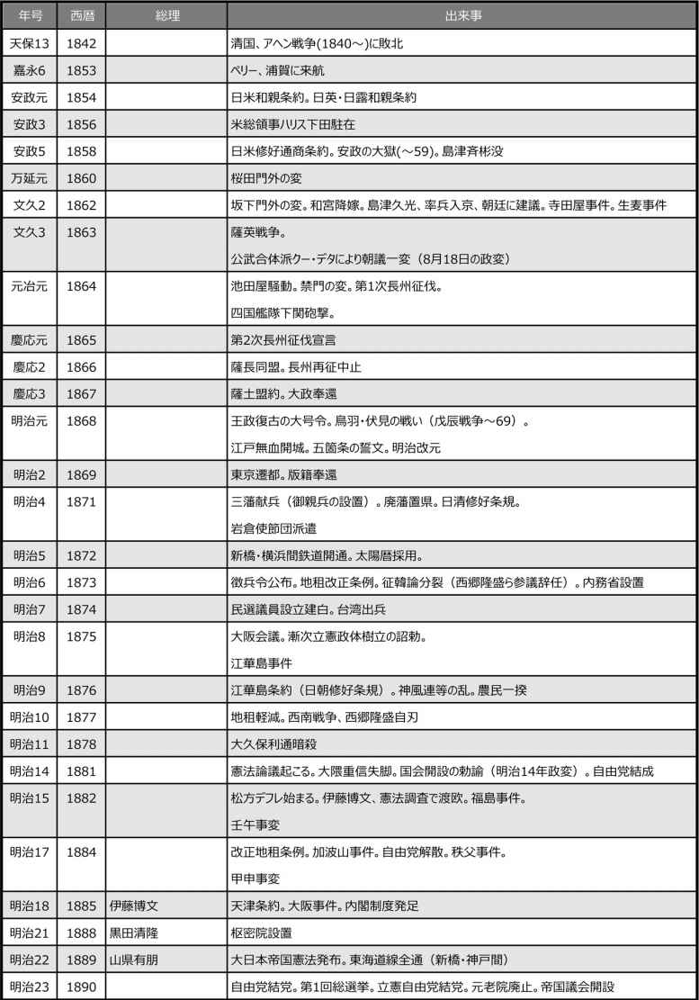

| [明治150周年記念] 名著から問題を読み解く! 明治から日本の未来を考える (6) 近代への道のり (impress QuickBooks) | |
| 平田 周三 | |
| 株式会社インプレス (2018) | |
日本近代史
坂野潤治 著
筑摩書房
2012年3月
ISBN：9784480066428
目次紹介
第１章 改革 1857―1863
第２章 革命 1863―1871
第３章 建設 1871―1880
第４章 運用 1880―1893
第５章 再編 1894―1924
第６章 危機 1925―1937
原著者紹介
坂野潤冶 (ばんの・じゅんじ)
坂野 潤冶 氏は、東京大学名誉教授。日本近代政治史専攻。東京大学文学部国史学科卒業。お茶の水女子大学文教育学部助教授等を経て、1986年東京大学社会科学研究所教授。1998年定年退官。その後2004年まで千葉大学法経学部教授。1937年神奈川県生まれ。在学中、60年安保闘争で全学連の幹部闘士として指揮した経歴を持つ。『近代日本の国家構想』で吉野作造賞、『日本憲政史』で角川源義賞を受賞している。
著書に、『近代日本の国家構想 1871―1936』(岩波現代文庫)、『日本政治「失敗」の研究』(講談社学術文庫)、『明治デモクラシー』(岩波新書)、『未完の明治維新』(ちくま新書)などがある。
要旨
原著者の坂野潤冶氏は、近代日本の歴史を、米国初代駐日総領事ハリスが幕府に通商条約調印を迫った1857年(安政4年)から、第一次近衛内閣が成立、日中戦争が起きた1937年(昭和12年)までの80年間を「改革期」「革命期」「建設期」「運用期」「再編期」「危機期」の6段階に分ける。
6つの段階は、「公武合体」→「尊王倒幕」→「殖産興業」→「明治立憲制」→「大正デモクラシー」→「昭和ファシズム」と表すこともできる。
「危機期」に続くのは日本史上最大の悪夢の太平洋戦争をもたらした「崩壊期」であるが、原著書はあえてこれには踏み込まない。
西欧列強の脅威にうろたえる幕府に愛想をつかし、ナショナリズムの感情から明治新政府は誕生した。薩長土藩の偉人が中心となり、近代日本の土台をつくっていった。明治維新を実現させた西郷隆盛や大久保利通、木戸孝 允 らがいなくなった後は、大隈重信、伊藤博文、井上馨らの後継者をリーダーに官僚の時代が到来する。大日本帝国憲法の制定、国会開催の予定が天皇により勅諭されると、自由民権運動は政党の時代へと発展していった。
板垣退助、大隈重信により結党された自由党と立憲改進党は、分裂と連合をくり返しながら議会での活動を展開し、政府は議会での予算案承認などの議論を無視できなくなる。ついに大隈・板垣による政党内閣が誕生する。政党の発言力増大を危惧する山県有朋らの保守勢力は政党の力を抑え込もうとするが、時代の流れには抗せない。伊藤博文は自ら政友会という政党を成立させ、総裁になった。
政党政治は次第に成長し、勢力を強めるが、藩閥政府は根強く、長老や貴族院などの保守勢力と拮抗した。軍備費削減、減税などを政府に要求する議会だったが、日清戦争、日露戦争で、国民やジャーナリストのナショナリズム昂揚に、政党も揺れ動く。経済の好況・不況は国民感情を変える。
対中国、対ロシアとの戦争での勝利は、日本の大陸膨張に油を注ぐ。満蒙進出は、中国や韓国の日本に対する敵意を増大させ、欧米諸国は日本の行動を警戒し、阻止する動きに変わっていく。国民は、欧米大国と肩を並べたことを喜び、軍部はその流れに乗って欲望を膨らませ、ファシズム化していった。
帝国議会は、1937年(昭和12年)に近衛内閣が成立するまで、正常に機能し、ファシズムに反対する意見が盛んに述べられていた。しかし、組閣では、青年将校らによるクー・デター後、軍が好む非政党の首相が続き、確かな方針が出ないまま軍が勝手に行動を起こすという状態になった。ファシズムの独裁者が日本を戦争へと導いたのではない。政党、官僚、軍部、財界とそれぞれの集団の中で意見が分裂し、全体を治めるリーダー不在の液状化が進んだのである。
それは、1937年(昭和12年)に近衛内閣が成立し、どの集団も近衛を支持し、その下に包摂されたとき、賛成反対の議論がされなくなり、戦争への深みへはまっていった。
コメント
起きた歴史的事件についての内容や原因結果ではなく、時代の中の主導者や時代を動かす力学の推移を主題として歴史の流れを説明するため、わかりやすく、これまでの歴史書にはない面白さを味わうことができる。最初は維新を実現した偉人たちが時代を動かし、やがて政党という利害共通性を持つ人たちの集団が力を得る。政党は特定の利害関係者から国民という不特定多数の有権者を意識せざるを得なくなり、国を治める政府も、政党の存在を無視できなくなった。その一方で、軍部という特殊な性格を持つ集団が、武力を武器にして勝手な行動を起こすようになり、それはやがてファシズムへと進む。ファシズムを抑えようとする力の葛藤。世界的な政治経済の流れに影響されながら、時代は進んで行った。
本書は新書ながら、日本近代政治史の第一人者が、力を込めて書き上げた労作である。いよいよ日本が最悪の崩壊期に入っていく1937年が、ヒットラーのようなファシズムの独裁者ではなく、政党、官僚、軍部など個々の集団がそれぞれ分裂状態になり、全体をまとめる力がある指導者を欠いて、事態は「液状化」したことこそが悪夢の太平洋戦争に導いたというのが原著者の考えである。
敗戦後の日本も、明治と同様のプロセスを経て今日に至ったと考えると、現在の政治情勢はもしかして、聡明で力のあるリーダーを欠く政治の流動化が起きており、「危機期」の段階に遭遇しているのではないか。

縮約
０．幕末から明治、大正、そして昭和へ
生い立ち
原著者の坂野 潤冶 氏は、日本の近代を次の7段階に分ける。このうちの6段階、改革期の1857年(安政4年)から危機期の1937年(昭和12年)までの80年間を説明し、「崩壊期」については、その始まりを示唆するにとどめている。
改革期 1850 公武合体
革命期 1860 尊王倒幕
建設期 1870 殖産興業
運用期 1890 明治立憲制
再編期 1900 大正デモクラシー
危機期 1930 昭和ファシズム
崩壊期 1940 大政翼賛会
このわずか80年間に、日本がもたらした変化は想像を絶する。まげを結い、刀を差した羽織袴の男が闊歩し、電車も電灯もない時代から、欧米列強5国と肩を並べるまでになったのである。世界のどの国も経験しなかったものではないか。
１．改革期 1857―1863 公武合体
時代の流れ
1840年(天保11年)、清国でアヘン戦争が起き、2年にわたる英国との戦いで清国は敗北した。この事変のことは日本にも届き、次に欧米列強が日本を攻めてくることを日本の一部の識者は自覚し、沿岸警備の重要性についての主張が先見の学者や指導者によって唱えられはじめた。
1853年(嘉永6年)、ペリー率いる艦隊が浦賀に来航、開国を要求した。250年余にわたる鎖国の中で日本に衝撃が走った。これを拒めば、戦いが起き日本の敗北は必至であり、要求を受け容れて開国すれば、鎖国を国是としてきた幕府の立場を失うという窮地に追い込まれた。
和親条約締結だけで帰国したアメリカは、1857年(安政4年)には初代駐日総領事を通じて、正式な通商条約の調印を迫った。翌年、混乱する中、大老の井伊直 弼 は、朝廷の承認を得ぬまま、幕府独断で日米修好通商条約の調印を行った。「攘夷」か「開国」かの対立が国内に巻き起こり、井伊は反対派の大弾圧を行った(安政の大獄)。
厳しい弾圧に対する反発とともに、天皇の許可なしに開国を断行した幕府への批判は「尊王攘夷」へと向かった。一方で、「尊王」を取り入れながら、雄藩の合議で改革を進め、開国の幕府体制を維持するという「公武合体論」が強まった。
京都において、「開国」と「公武合体」を結びつける薩摩藩と、「攘夷」と「尊王」をセットにする長州藩や土佐藩が、共に朝廷に圧力をかけるという分裂状態が顕在化してきた。そして、1864年(元治元年)、「公武合体」と「尊王攘夷」の2つの幕府批判勢力が正面衝突した。「禁門の変」である。幕府支持の会津藩と公武合体論の薩摩藩が手を結んで、尊王攘夷の長州藩の孤立化を謀った。
敗北した長州藩に、反開国派と反幕府派の双方が同情を寄せた。長州は四国艦隊下関砲撃事件以後、「攘夷」を引き下げたため、「攘夷」か「開国」の対立を棚上げし、「尊王」か「佐幕」かに選択肢を絞り込む動きが現実的になってきた。その結果、薩摩と長州の歩み寄りが倒幕派を勢いづけ、1868年(慶応4年)の明治維新へと突き進んでいく。
流れの中心に立った薩摩藩
名君として時代の先を見ていた薩摩藩主島津斉 彬 が、50歳の若さで1858年(安政5年)に突然病死した。その跡を継いだ久光は斉彬のような信望も見識もなかったが、政治の中心になりたいという野望は強く、大久保利通ら薩摩の改革派の説得を受けて、単独で軍を率いて上京を計画した。大久保の陳情が実を結び、安政の大獄の嫌疑を恐れた薩摩藩から流刑となっていた西郷隆盛が3年ぶりに鹿児島に戻ってきた。
斉彬の命を受け、幕府や大藩の藩主、有力家臣、著名な知識人との人脈を持っていた西郷は、情勢判断の誤りと他藩との合従連衡の必要性を久光に説いた。「公武合体」を考える久光に対し、「尊王」思想の斉彬を崇拝した西郷は、改革は討幕しかないと考えていた。この久光批判で、西郷は再び流刑の身となった。
1862年(文久2年)、久光は、公家たちを説得して計画した公武合体によって開国を進めるという提案書を携えて江戸に向かった。この提案では、他の有力大名の召集は不要としていたため、江戸から京都に戻った久光は、朝廷からも有力諸藩からも、さらに諸藩の志士からも冷たくはねつけられ、孤立状態となって、鹿児島に戻った。その前、江戸から京都への帰途、久光の行列の前を横切った英国人を斬るという生麦事件を起こした(翌年、薩英戦争となる)。
文久2年は、幕府改革や開国について、さまざまな意見が錯綜し、混迷を深める時期となった。時勢は、次の段階へと進みつつあった。
２．革命期 1863―1871 尊王倒幕
宮廷クー・デター
1863年(文久3年)8月18日、朝廷で尊王攘夷派の公卿と長州藩士たちを京都から追放する政変が起きた。「8月18日政変」として知られる。一方、久光が帰国した後、諸藩の間では、「佐幕」か「尊王」に論が分かれ、公武合体の推進を策した薩摩の地位はその中に埋没しようとしていた。鹿児島では、生麦事件の賠償金を拒否する薩摩に対し、英国艦隊は砲撃をしかけ、藩は苦境にあった。大久保らの強い要請を受け、久光は西郷の再度の復帰を認め、西郷は「軍賦役」に就き、薩摩藩の軍事力を掌握した。維新の大業はここから始まったといえよう。
禁門の変
西郷の復帰と前後して京都で騒動が持ちあがった。新撰組が池田屋に集まっていた長州藩士らを襲撃した。それを知って、長州の藩兵1800人が京都に向かった。朝廷への陳情が目的だったが、勢いを駆って御所の蛤御門に集まった軍勢を見て、天皇の追討令が出され、会津藩らと共に警護の任にあった薩摩藩は長州を討たねばならなかった。
長州は敗走した。薩摩藩を同志とみていた長州藩の志士たちは、薩摩藩に深い恨みを抱いた。朝廷からの要請を受けて、幕府は長州征伐を決め、西郷が総指揮をとった。長州に向かう直前に西郷は幕府軍艦奉行の勝海舟に会って、幕府の内実を知り、長州を武力攻撃せず、談判で事を片付けた。幕府軍の勝利となったが、長州は藩の責任者の切腹で事を収めることができた。禁門の変の直後に起きた四国艦隊下関砲撃事件をきっかけにして長州では変革が起き、「攘夷」を放棄した。
薩長同盟、薩土盟約
第二次長州征伐の命が下されたが、薩摩藩は動かなかった。圧倒的兵力を持ちながら統制力を欠いた幕府軍は士気が上がらず大敗を喫した。長州が攘夷を捨てたことで、西郷の考える合従連衡が可能となり、1866年(慶応2年)1月、「薩長同盟」が結ばれた。長州は、賊軍となったことへの名誉の回復を条件とした。
薩摩藩はさらに土佐藩とも盟約を結んだ。この中で、徳川慶喜が将軍職を辞し、諸侯の列に帰順し、政権を朝廷に返すことが述べられている。もう一つ、上院・下院の二院制についての規定があり、上院は公卿と諸侯が、下院には諸藩の藩士が、いずれも選挙により選ばれることを定めた。この盟約の原案は土佐藩の後藤象二郎が書いたものだが、坂本龍馬の「船中八策」が参考にされている。
官軍の形成
将軍徳川慶喜は、状況を判断して、大政奉還を決めた。それとともに、朝廷側は王政復古を宣言した。このままで、幕府は終わり、新政治体制が生まれるはずである。にもかかわらず、鳥羽・伏見の戦いが起き、薩摩・長州・土佐などが官軍となり、賊軍となった幕府軍を追い詰め、東北へと戦いは続くことになる。
なぜそのようになったのか。事情はかなり複雑である。まず幕府内部にも、薩摩、土佐両藩にも「穏健派」と「急進派」がいた。倒幕一つにまとまっていたのは長州藩だけだった。小松帯刀 、西郷隆盛、大久保利通の3人は薩摩藩の急進派だった。幕府側の強硬派の根拠は、幕府軍の圧倒的兵力にあった。
論点は、大政奉還した後、徳川慶喜が上院の議長になるということだった。これでは、諸藩候の議論が重視されるとはいえ、旧幕府体制の継続になりかねない。反幕府勢力急進派の狙いは、徳川家が持つ800万石と領地の朝廷への返納だった。これには、幕府側の強硬派が断固反対した。
西郷は、このような情勢を見ながら、幕府側が仕掛けてくるのを待った。挑発も行った。それに乗って、大坂城にいた幕府軍が動き、薩長土芸(広島)4藩の軍とぶつかり、鳥羽・伏見の戦いとなった。
これに勝利した薩摩、長州、土佐藩らは、討幕軍を組織し、錦の御旗を立てて官軍となり、江戸へと攻め上った。江戸攻撃を前に、勝海舟と西郷が会談し、江戸無血開城が決まった。慶喜は蟄居し、明治新政府が誕生した。
維新新政府
明治新政府は、王政復古の前に議論されていた構想を基礎に、宮様・公卿をトップに、薩長土の代表者が実務をとる体制でスタートしたが、諸般のバランスをとった人事など、いろいろな問題に直面していた。
中でも財政問題は重要だった。新政府は旧幕府の700万石をベースにスタートしたが、名実ともに中央集権政府となるには、まず各藩が個々に握る年貢を中央に集めることが必要である。それには相当の抵抗が予想されるが、東北戦争終結後は、官軍は解散され、それぞれの藩に帰っており、政府は軍を持っていなかった。
1871年(明治4年)、薩長土3藩から「献兵」というかたちで約6000名が御親兵として徴集された。これに要する費用は各藩の負担だった。しかし、これでは政府の軍隊とはいえない。政府が費用を賄うため、諸藩の年貢徴収権を中央政府に集中することが不可欠だった。
新政府の木戸孝 允 の配下にあった大蔵省の大隈重信、井上馨、伊藤博文らと、欧州の兵制視察から戻った兵部省の山県有朋、西郷従 道 らの間での論議が、廃藩置県の実現へと向かわせた。
1871年(明治4年)7月、廃藩置県が断行された。これは1864年(元冶元年)頃に始まった「革命の時代」は終焉を告げるものとなった。
３．建設期 1871―1880 殖産興業
岩倉欧米使節団
新しい段階は、日本近代史上最大の変革、廃藩置県の完成から始まった。わずかその4カ月後、岩倉具 視 を全権大使、大久保利通、木戸孝允、伊藤博文(工部大輔)、山口尚芳(外務少輔)の4人を全権副使とし、各省の次官級を理事官とする48名の使節団と6名の男女留学生を加えた大使節団が、サンフランシスコを目指して横浜を出帆した。留守政府は、西郷隆盛以下、板垣退助、大隈重信、山県有朋、伊藤馨らに託された。
「革命」の直後に新政府の中心人物の約半分が1年余にわたって欧米視察に出かけるのは、大胆を通り越して無謀にすら思えるが、成果は大きかった。留守の間の国内は、西郷の睨みもあって、平穏に時は過ぎた。
大久保は、「強兵」に先立つ殖産興業(「富国」)の重要性を欧米視察から学んだ。同じく木戸は、欧米視察で、国家統治の基本法としての「憲法」の重要性を認識、プロイセン憲法について知識を得た。
一方、岩倉使節団欧米視察の留守居役を任じた西郷隆盛と板垣退助は共に戊辰戦争を戦った仲であり、軍事に強いかかわりがあった。留守中に、ロシアの樺太、清国の台湾の領土問題、日本に反発する朝鮮の問題など、外征論が浮上し、西郷は朝鮮への全権使節派遣を主張した。「強兵」では西郷に及ばない板垣は、自由民権問題へと傾いていく。
いうなれば、「富国派」(大久保)、「憲法派」(木戸)、「強兵派」(西郷)、「議会派」(板垣)の4つの思想と勢力を政争の軸として時代は動いていく。この4路線の葛藤から、明治の【建設期】を知ることができる。
「富国」の優勢
留守中に決められていた西郷朝鮮使節派遣を、大久保は強引に止めた。殖産興業が第一だとする大久保にとって、財政の逼迫を考えれば外征などもってのほかである。これに怒った西郷は参議を辞任して、鹿児島に帰った。
外遊中、大久保と不仲になった木戸は、帰国して体調を崩し、憲法論を展開する力はなかった。板垣も西郷に同調して参議を辞任、自説の民選議員設立の建白書を出したが、憲法問題が定まらないかぎり実体はない。
大久保は内務省を設立して、行政を掌握した。殖産興業の政策は、官営近代工場設立による欧米からの輸入品に対抗できる生産(輸入代替工業化)とインフラ整備の拡充だった。
台湾出兵
1871年(明治4年)11月、琉球人漁師が台湾に漂着して現地人に殺害されるという事件が起きた。旧薩摩藩士たちはこれに憤った。大久保は、同じ薩摩藩出身者の「外正論」に囲まれていた。台湾出兵は、1874年(明治7年)5月、大久保の手によって断行された。結果的に、これが西郷と大久保の関係をよくした。しかし、木戸は、台湾出兵を決めた大久保とたもとを分けた。
この事件について清国との和解交渉の結果、日本に賠償金を得るなど、大久保を利した。旧薩摩の強硬派による清国との戦争論も止めることができた。しかし、
薩摩派の外征論を抑えるには、大久保は長州の木戸と土佐の板垣の力を必要としていた。
大阪会議
大久保から離れていた木戸と板垣を説得して孤立する大久保を救おうとしたのは井上馨と伊藤博文だった。井上は、薩摩派の外征論を抑えるには、参議を辞任していた木戸と板垣を復帰させるほかないと考えていた。
木戸は参議復帰の条件として、外征を拒否すること、漸次に立憲政体を確立し国会を開くことを天皇の詔勅として表明することを要求した。自由民権を標榜する板垣もこれに異存はない。大阪会議の結果、再び、大久保・木戸・板垣が手を結び、西郷が孤立することになった。
漸次立憲政体樹立の詔勅が1875年(明治8年)に出された。自由民権運動に火がついた。
木戸・板垣の分裂と江華島事件
詔勅が下ると、板垣ら民選議院設立の急進派は、国会開催の時期の予定を木戸や井上に迫った。木戸は、漸次に国家立憲の政体をつくるという約束だったと、これに反論した。
そのとき、江華島事件が勃発した。台湾問題をめぐる日中対立に終止符を打った政府は、日朝関係の打開をめざしていた。しかし、交渉の行き詰まりから、交渉団副代表の広津弘信(外務省)が政府に軍事的示威を求めた。日本海軍は測量艦を派遣、江華島近くに投錨しボートで草芝鎮に向かったとき、朝鮮側の砲台から攻撃を受け、翌日、同島を攻撃して上陸し拠点を占領した。これは明らかに、日本の挑発であり、のちの韓国併合に連なる重大事件だった。
前年の台湾出兵が対清開戦に至らず、いわば肩すかしを喰った形の鹿児島の西郷派や中央政府の軍部の不満が、江華島事件の一因となっていた。
江華島事件は征韓論には発展せず、「外征派」は行き詰まった。「憲法派」の木戸は、板垣ら急進派と決別して、立場を失っていたし、井上は当面の勢力挽回を諦めて、欧米視察の途についた。
いまや、政府の中心は大久保率いる「富国派」が握ることとなった。
西南戦争
大久保の時代が到来した一方で、国内には、さまざまな不満分子が広がっていた。戊辰戦争の経験者、御親兵＝近衛兵の構成員、征韓論に同調した不平士族、台湾出兵の参加者、江華島事件の支持者、さらには、早期国会開設を要求した民選議院派までがその中に含まれていた。時の明治政府に不満を抱く者たちの多くは、西郷隆盛の蹶起に期待していた。
そのような状況の中、1877年(明治10年)、西南戦争が起きた。征韓論争に敗れて鹿児島に帰っていた西郷は、強力な私兵を組織していた。3年前に創設した私学校である。西郷は兵を率いて鹿児島を立ち、政府軍の鎮台がある熊本をめざした。政府軍の軍隊は、西郷軍の兵力をはるかに上回っていたが、徴兵で集められた兵士の戦闘能力は当然低かった。しかし、武器と訓練された統制では相手を凌いでいた。7カ月に及ぶ激しい戦いの末、西郷軍は敗れ、西郷隆盛は自刃して果てた。
西南戦争での勝利により、大久保利通を中心とする政府は、「議会派」「憲法派」に続いて「強兵派」の鎮圧にも成功した。「富国派」全盛の時代、「殖産興業」中心の時代が到来した。
しかし、政府側の戦費は約4100万円に上り、それを捻出するため、政府は不換紙幣を発行してこれに当てた。これにより、政府の財政はやがて行き詰まる。
1978年(明治11)5月、大久保は暗殺された。その後の殖産興業政策は、大蔵卿の大隈重信、北海道開拓長官の黒田清隆、薩摩出身で大阪財界の中心人物だった五代友厚のトリオに引き継がれた。五代が指摘したように、新政府の最大の失策は、税制制度にあった。
４．運用期 1880―1893 明治立憲制
納税制度の矛盾
廃藩置県により藩の石高制を廃止して、明治新政府が実施した税制は、土地所有者に掛けられる「地租」だけであり、しかも金納固定税だった。土地所有者は1873年(明治6年)から1880年(明治13年)にかけて行われた地租改正によって、所有地の税額を明記した地券を渡された。
この制度の下では、物価スライド性がまったくないため、不景気で物価が下った時には財政が豊かになり、好景気などで物価が上がれば租税の実収は減少することになる。財政の健全化を図るには、デフレ政策を採用するしかないシステムだった。
しかし、西南戦争中からの財政方針は、戦費を賄うため、不換紙幣や起業公債の発行など、インフレを志向するものだった。地租納入者の大半は米作地主だったから、米価が上がれば、政府は損をし地主は得をする。その米価が、西南戦争の前年(1876年)に1石5円13銭であったものが、1880年には10円57銭になった。わずか4年間で2倍以上高騰したのである。地租の税額はまったく変わらないので、地主は約50％の収入増(実質減税)になり、政府の税収は約50%の実質減少になった。
政府税収の減少は対外的には円の信用低下となって現れるから、輸入品の価格も高騰し、インフレを加速させた。
松方デフレ
「殖産興業」路線を継承した大隈重信に代わって首相となった松方正義は、厳しい緊縮財政方策をとった。それによって、1882年(明治15年)に始まったデフレは1886年(明治19年)まで4年にわたって続いた。世にいう松方デフレである。
これにより、米の東京卸売価格は3年間で半分に値下がりした。その結果、中小地主が自作農になり、自作農は自作と小作を兼ねる自小作農に転落した。大地主は所有土地を増やした。
松方デフレ以前、板垣らが出した「民選議院設立建白書」には、租税を払う義務がある者を国政選挙の有権者とすることを定めていた。納税者の大半は農地を持つ地主であることから、農民の政治参加が現実的になった。加えて、西南戦争によるインフレは、農村地主を富裕化させていた。
農民民権運動が盛んになり、国会開設運動の中心勢力にまでなったのである。農民地主が国会の代表となれば、地租の軽減を求め、歳入の減少に見合うよう政府支出の削減を求めるに違いなかった。
大隈の国会開設提案とその波紋
農民が主流となった国会開設要求を見て、大隈は早期の憲法制定と国会開設必要性を主張した。大隈の意見は、1、2年で天皇の名で憲法を制定し、2、3年で議会を開設し、内閣はその議会で多数を占めた政党が握るという議員内閣構想だった。
大隈の主張を支持したのは、福沢諭吉だった。大隈の建白書の起草者は、福沢の高弟で太政官権人書記官の矢野文雄が書いた。矢野は、慶応義塾を卒業して官界、財界、言論界で活躍する1600人余のエリート層で構成される交詢社の中心人物でもあった。
保守派の法制官僚井上毅 は、農民民権と福沢ら交詢社の結びつきに強い警戒感を抱いた。井上はこのことを伊藤博文に伝えた。伊藤博文は、財政政策では松方を支持、憲法論については井上の意見を取り入れ、大隈路線からの決別を決心した。結局、詔勅が出て、憲法制定と議会開催が約束された。
井上の憲法意見は、大隈・福沢の唱えるイギリス型の立憲君主制は、実質的に君主抜きの議院内閣制であり、ドイツ型(プロシア)の立憲制では、行政の権はもっぱら国王の手にあると説明した。
もとは「士族民権」だった板垣らの民権運動は、士族の没落、農村地主の富裕化により「農民民権」へと移っていった。一方、交詢社という福沢が率いる都市知識人のグループも大隈を中心に農民の支持を求め、両者の争いとなった。この2つの国会開設論者の競合の中に新たに割り込んできたのが、井上毅らの保守的立憲制論者だった。
政府内部の国会開設論者の大隈と在野の板垣を融合させて、伊藤や井上毅に代表される保守的な政府指導を一掃しようと都市型知識人たちは考えた。しかし、急進派の板垣はこの要望を一蹴して、自由党を創立した。一方、政府内の保守派は、大隈とその配下の官吏を罷免した結果、中間に位置していたリベラル派が、政府内と運動内での勢力を一挙に喪失することになった。これが「明治14年政変」である。
「強兵」の復権
全盛を極めた「富国」も、松方財政の登場により、退場を迫られた。そのとき、「強兵」が姿を変えて再登場してきた。「強兵」の復活のきっかけは、清朝中国だった。日韓江華島条約が実施された後、朝鮮をめぐる日清両国の利害対立が鮮明になっていた。韓国政府内部にも親日派が現れ、日本はこれの支援を始めた。
幕末以来、日本は欧米列強の脅威だけを問題にしてきたが、ここにきて清国脅威論が高まってきた。清国の脅威を明治政府内部で最初に説いたのは当時参謀本部長山県有朋だったと思われる。清国の脅威を高めることで、「強兵」が再び力を得た。
松方緊縮財政で政府支出が厳しく抑制される中、軍備拡張は不可能だったが、不換紙幣の整理が進むにつれて、円の国際的評価は回復しており、海軍公債の発行も可能になっていた。朝鮮で起きた1882年(明治15年)の壬午事変、1884年(明治17年)の甲申事変で日本関係者が被害を受けた事件は、陸海軍も対清軍拡要求に拍車をかけた。
議会開設
1889年(明治22年)、大日本帝国憲法が発布となり、翌年、第1回総選挙が行われた。板垣らの自由党派が勝てば、減税を要求する「拒否権型議会」となり、大隈・福沢らの都市派が勝利すれば、参画型議会のイギリス型議院内閣になるはずだった。結果は、拒否権型議会の勝利で終わった。以後、1900年(明治33年)に伊藤博文が立憲政友会を結成するまでの10年間、政府と議会は予算をめぐる対決が続き、両者の駆け引きが行われた。
かくして、作文にすぎなかった憲法条項を、「運用」の観点から、政府と衆議院の双方で試行錯誤を繰り返しながら、着地点を模索していった。
５．再編期 1894―1924 大正デモクラシー
再編の時代の意味
「運用の時代」が官僚と農村地主の時代だったとすれば、「再編の時代」とは官僚内閣を倒し、政党内閣を樹立することを意味した。さらに選挙権を農村地主中心から都市商工業者や労働者、農村の小作農にも与えること、すなわち普通選挙制の樹立が目的となる。
それが実現したのは大正が終わり、昭和に入ってからのことだった。「大正デモクラシー」と呼ばれるが、その実現に向かっての葛藤の時期だったのである。
日清戦争がもたらしたもの
日清戦争(1894～95年)によるナショナリズムの高揚と、戦勝による清国からの賠償金(約3億3000万円)が世論を大きく変えた。戦争中から戦後にかけて物価が高騰した結果、農村地主の金納固定制の納税負担は実質半減した。農村地主はもはや地租の軽減を求めていなかった。彼らの願いだった地方への鉄道普及も賠償金のおかげで実現可能となった。農村地主を支持基盤とする自由党は勢力を強めた。
しかし、自由党は、戦勝による軍部の軍拡欲の増大を見誤った。自由党が期待した積極財政(主として鉄道拡充)の財源に賠償金は当てることができなかったのである。第2次伊藤内閣が作成した8―10年間の臨時部予算は、軍事費2億8000万円(これは陸海軍の経常費は含まない)、公共事業費4000万円という内容である。地租の増税が画策された。
自由党の衰退と隈板内閣
増税は、農村地主を納税反対派と鉄道普及期待派に分裂させた。選挙の結果、自由党が大幅に議席を減らし、大隈重信が率いる進歩党が躍進した。議会の賛成がなければ増税は実施できない。第2次伊藤内閣は政権を松方正義に譲ったが、第2次松方内閣もまた解散総辞職に追い込まれた。しかし、代わった第3次伊藤内閣も予算不成立で再び総辞職するほかなく、その後継に進歩党の大隈を首相に、自由党の板垣を内務大臣とする政権にするほかないと判断した。元勲に相談した。陸海軍や官僚に信用の厚い山県はこれに反対したが、対案がなかった。
ここにわが国初の政党内閣、隈板内閣が成立したのである。陸海軍両大臣以外は閣僚全員が政党員だった。
しかし、自由党と進歩党が合同して生まれた支持政党の憲政党が、旧自由党と旧進歩党が離反したため、隈板内閣は成立したその年のうちに総辞職を余儀なくされた。この分裂には、駐米公使を務めた自由党の指導者星亨 の画策があった。
新たに、山県を首相とする政党員を一人も含まない超然内閣が組織された。星が率いる憲政党(旧自由党)がこの第2次山県内閣を閣外から支えた。その後、伊藤自身による立憲政友会の結成に星は力を貸した。以後、政友会は政権与党として政治の中心になる。
日露戦争
日露戦争は総力戦となった。都市労働者と自作・小作の農民は兵士として、農村地主は増税負担によって、この国の運命を決する戦争に協力した。戦争は日本の勝利で終わった。しかし、領土獲得はともかく、賠償金がまったく取れなかったことに国民の怒りが爆発し、日比谷公園焼打ち事件が起きた。
第4次伊藤内閣の後を受けた桂太郎内閣は、山県の軍部および官僚の支持を受けていたが、国会では政友会の協力が必要だった。政友会の総裁は、元老の西園寺公望だった。以後、桂と西園寺の2人は、交互に政権をたらい回しにして政局を乗り切るという桂園時代が到来した。日露戦争が終わった1905年(明治38年)から、明治が大正と改元になった1912年(大正元年)まで、この癒着体制が続いたのである。
西園寺内閣と政友会
日露戦争(1904～05年)は、巨額の戦費投入とともに、物価の高騰を招いた。これは農村地主を有利にする。西園寺内閣は、積極財政策として、鉄道国有法を成立させた。経営不振の私鉄を国家が買い上げることのほか、国有化された旧私鉄がどのように延長されるかが地方発展には大きな影響をもたらす。農村地主はこれを歓迎した。このおかげで、政友会は1908年(明治41年)と1912年(大正元年)の2度の総選挙で他の党を圧倒した。
しかし、万年与党の政友会も地雷を抱えていた。日露戦争の講和条件への不満が爆発した日比谷焼打ち事件は後を引き、全国に騒然とした空気があった。さらに大きな問題は、戦後不況だった。都市商工業者は政友会を攻撃し、内閣に財政健全化と営業税軽減を迫った。米価低下で、農村地主の批判も強まっていた。第2次西園寺内閣は、行政整理による歳出抑制を図り、消極主義路線で対応した。
増大しつづける軍拡への欲求
減税と緊縮財政で苦しむ西園寺内閣を苦境に追い込んだのが、陸海軍の飽くなき軍拡への欲求だった。陸軍はロシアと清国を、海軍はアメリカを「仮想敵」に見立てて、大規模な軍拡を政府に求めた。
韓国併合、清国辛亥 革命に際しての満蒙独立構想と、軍事的政治的な大陸膨張は活発化していった。陸軍の軍拡に対して行政整理で抵抗した西園寺内閣を都市実業層は全面的に支持した。ジャーナリストの多くも、閥族打破の論陣を張って軍部の横暴を非難した。
朝鮮駐屯の2師団増設を拒否されて陸軍大臣の上原勇作が単独辞任し、第2次西園寺内閣は総辞職を強いられた。これが「大正政変」の始まりとなり、第1次憲政擁護運動に火をつける。
政友会の挫折と第2次大隈内閣
都市における金融界、実業界、都市中下層階級の意見を政府は無視できなくなっていた。陸軍と官僚層と貴族院を握る藩閥勢力と、農村地主を味方につけた政友会との協調だけでは問題を処理しきれなくなったのである。
第2次西園寺内閣の後を受けた陸軍の長老桂が第3次内閣を組織すると、日比谷焼打ち事件が再現した。これをきっかけに広がった第1次憲政擁護運動に、今回は、野党国民党(犬養毅)とともに与党政友会も参加した。第1次憲政擁護運動には、「二大政党制」と「普通選挙制」という2つの課題があったが、いずれも達成しないまま2カ月で収束した。
この混乱の責任をとって辞任した長州閥で陸軍の桂に代わって、薩摩閥で海軍の大御所の山本権兵衛が政権につき、再び政友会が与党に返り咲いた。首相、外相、陸海軍相を除くすべての閣僚が政友会から選ばれ、同党の第3代総裁となった積極主義の原敬 が内相に入閣した。蔵相には財政のプロ高橋是 清 が就任した。
すべて順調と思われた矢先、海軍で軍艦建造をめぐる収賄シーメンス事件が発覚し、山本内閣は躓いた。倒閣には、貴族院の意向が強く働いた。
山本内閣の総辞職を受けて、元老会議での後継首班選考は難航したが、けっきょく1914年(大正3年)4月、大隈重信に組閣の大命が下った。大隈の下(憲政会)には、桂を総裁とする立憲同志会をはじめとする野党が結集した。
欧州留学から帰国した東京帝国大学法学部教授の吉野作造は大隈政権の誕生を高く評価した。吉野はイギリス議会主義の二大政党と普通選挙の実現を標榜し、政治の目的が一般民衆を幸福にすることにあるとした(のちの民本主義)。
1915年(大正4年)の総選挙では、大隈内閣の与党3派が、381議席中244議席を獲得し、政友会は一気に少数党に転落し、二大政党の原型ができた。政友会にとっては、1900年(明治33年)の結党以来15年にして初めて迎えた試練だった。
第1次世界大戦後
1914年(大正3年)7月の第1次世界大戦の勃発が、はからずも情勢を変えた。陸軍に接近し、対中国21カ条を突き付けるなど強硬姿勢を見せた大隈内閣にとって、最初は、大戦開始は有利に見えたが、大戦景気が到来すると、農村地主が富裕化したため、再び政友会に流が来た。山県が大隈首相に退陣を迫り、党内の分裂もあって、陸軍の長老寺内正毅 に後継内閣を組織させた。寺内首相は少数党の政友会の原敬を提携相手に選んだ。
しかし、寺内内閣は、シベリア出兵の失敗と米騒動で2年弱で退陣、代わって原敬が首相に就任した。対米重視の幣原 喜重郎 が官僚として支援していくことになった。第1次世界大戦後の世界的好況とわが国の輸出好調を背景に、原内閣は積極政策を実施し、幅広い有権者の支持を得た。
しかし、1921年(大正10年)原が暗殺され、後を継いだ高橋是清は参謀本部廃止論を公表するなど軍からにらまれる存在であり、以後、軍が支持する非政党内閣が3代(加藤友三郎、山本権兵衛、清浦奎吾)続いた。政友会が野に下って以来、第2次憲政擁護運度が起こり、1924年(大正13年)の選挙の結果、護憲三派(加藤高明、高橋是清、犬飼毅)が勝利し、憲政会の加藤高明が首相に就任した。
そして、加藤の手によって、1925年(大正14年)長年の要求だった男子普通選挙法が成立した。
６．危機期 1925―1937 昭和ファシズム
政友会と憲政会
もともと政友会と憲政会は、内政と外政の方針について、奇妙なねじれがあった。原敬・高橋是清の政友会は、内政では明らかな反民主主義的であり、加藤高明率いる憲政会は民主主義的な政党だった。しかし、外政においては、政友会のほうが平和的で、憲政会が強硬外交だった。
国内の問題では、普通選挙の実現が最大関心だったのに対し、海外では、植民地帝国主義から非植民地帝国主義に揺れ動いていた。そのいずれが政権をとっても、「平和」か「民主化」のどちらかは担保できたのである。
幣原喜重郎と田中義一
1924年(大正13年)、護憲三派内閣が発足したとき、憲政会は対外政策を変えることになった。加藤高明内閣の外相に、原内閣のときにワシントン会議全権大使を務めた幣原喜重郎が就任し、国際協調と中国内政不干渉政策を行った。幣原の考えは、一国の政府が公然と外国に与えた約束は、政権が変わろうとも、変更してはならないという「外交政策継続主義」だった。
しかし、幣原の外交政策は、加藤高明、若槻礼次郎の憲政会内閣が退陣して成立した政友会の田中義一内閣(1927年)には完全に無視された。田中の「産業立国」論は、資源確保のために「満蒙特殊地域」を武力をもっても擁護するというもので、原敬・高橋是清時代の政友会の対外政策を180度転換するものだった。
田中の政策は山東出兵、中国内政への武力干渉を実現させた。国内でも、田中時代の政友会は、「皇室中心主義」を振り回した。右傾化した政友会は、陸軍内の満蒙強硬論者を勢いづかせた。
以後、山東出兵、関東軍の突出、張作霖爆殺事件、満州事変、5・15事件へとつながっていく。陸海軍青年将校と民間右翼の横断的結合は、幕末期の薩長土三藩の下級武士と脱藩浪士の横断的結合と、形の上では酷似している。しかし、国が上昇過程に入ったときと、下降局面に入ったときとでは、「下剋上」のもたらす結果がまったく異なる。明治維新が「革命」であったとしたら、昭和維新は「反革命」だったといえるかもしれない。ただ共通していたのは、明治維新が「尊王」であり、昭和維新は「天皇制」だったことである。もう一つの共通点は両者が軍隊を掌握していたことだった。
勢いづく満蒙強硬派
1930年(昭和5年)は、前年にアメリカで発生した世界恐慌が日本へ押し寄せ、経済はひどい状況になった。1931年9月、関東軍の暴発は、満州事変を起こすに至った。そして翌年の1932年、青年将校によるクー・デター5・15事件となったのである。この3年間に起きたこの3つの事件こそが、「危機」の時代を象徴するものだった。
このうち「経済」と「クー・デター」の問題は、景気の回復、日本の産業躍進、軍の中の規律回復によって当面解決された。ただ、満州国建国に関わる対外問題だけは泥沼化し、リットン国際連盟満州調査団、日本の国際連盟離脱、そしてやがて太平洋戦争への道を進んで行く。
一方政治では、憲法の定めるところに従い、衆議院選挙は実施され、議会では政府や軍部に対する批判の議論は続けられたのである。普通選挙の実施、政友会と民政党という二大政党間の政権交代も行われていた。衆議院での第一党が内閣を組織すべきだとする「憲政の常道」も原則として存在していた。しかし、5・15事件以後、1945年の敗戦まで、政党内閣が成立することは一度もなかった。
青年将校の反乱を抑えた軍の力が増し、その意見を反映する、政党基盤を持たない、あるいは挙国一致を謳う斎藤実、岡田啓介、広田弘毅、林銑十郎による内閣が続いた。そして、1937年、政党、軍部、官僚、資本家など、すべての政治勢力によって支持される近衛文麿内閣が誕生するのである。
政治社会に起きた液状化
青年将校のクー・デター、関東軍の暴発から対中全面戦争など、次第にファシズムが頭をもたげてくる。そうした日本の右傾化の中、これに反抗する勢力は、けっして弱いものではなかった。議院内閣が挫折する中、政友会も民政党も政権復帰を諦めたわけではないし、合法社会主義政党の社会大衆党も選挙では躍進を見せた。
独裁者が国を戦争へと引っ張ったわけではなかった。国際情勢や主義をめぐって、政友会、民政党、軍部、官僚のそれぞれの中が2つの勢力に分かれ、政治社会が流動化していたのである。問題を根本的に変える確固たるリーダーが存在せず、支配勢力が四分五裂になり、政治エリートの質が低下した。
決定的な政治判断はなく、次々と起こる事件に政界は左と右に揺れつづけた。その極みは、すべての政治勢力を包摂した近衛内閣だった。すべての勢力に支持された内閣には、基本路線も、信頼できる与党的勢力も存在しない。そこから「崩壊の時代」が始まった。
新編 明治精神史
色川大吉 著
中央公論新社
1982年5月
ISBN：9784120002595
目次紹介
第１部 民衆の精神動態
１ 多摩の夜明け
２ 一地方の人間発掘から
３ 自由民権運動の地下水を汲むもの
４ 民権と国権の相剋
５ 敗残のナショナリズム―大矢正夫
６ 放浪のナショナリズム―石坂公歴
７ 栄光のナショナリズム―村野常右衛門
８ 草の根の民主主義―深沢権八と千葉卓三郎
９ 伝統型の文人思想―秋山国三郎
10 開明型の生活思想―平野友輔
11 明治の豪農の精神構造―細野喜代四郎と須長漣造
第２部 歴史的展開
１ 和魂洋才の道―草莽の目ざめ
２ 豪農民権への展開―徳富蘇峰の思想形成
３ 日本近代化の構想―典型的日本モダニズムの一例
４ 3つの未来モデル―中江兆民の方法
５ 「内部生命」の世界―北村透谷の創造
６ 明治20年代の思想・文化―西欧派と国粋派
７ 明治30年代の思想・文化―明治精神史の断層
第３部 方法と総括
１ 精神史とはなにか
２ 歴史叙述とはなにか
３ 明治精神史の方法と課題 旧版への批判にこたえて
原著者紹介
色川大吉 (いろかわ・だいきち)
色川 大吉 氏は、東京経済大学名誉教授。異色の歴史家である。東京帝国大学に入学するも、学徒出陣となる。戦後復学し、1948年東京大学を卒業。日本共産党に入党し、日本の独立まで地下に潜行する。のち東京経済大学講師となり、その後教授となる。1996年、同大学定年退職。"色川史学"と呼ばれる底辺の民衆の視点からの歴史の掘り起こしは、明治期の埋もれた民衆思想を発掘した。1970年、米国プリンストン大学で近代日本史の客員教授を務め、翌年、友人ら数人でユーラシア大陸を走破するなど自由奔放さで知られる。現在は山梨県の八ヶ岳地方に暮らし、執筆活動や講演を行っている。1925年千葉県生まれ。
多数の著書の中には、『明治の文化』(岩波書店)、『歴史家の嘘と夢』(朝日新聞社)、『歴史の方法』(大和書房)、『昭和へのレクイエム：自分史最終篇』(岩波書店)、『戦後七〇年史：1945―2015』(講談社)がある。
要旨
「精神史」と「思想史」とはどう違うのか。原著者の色川大吉氏は、「はしがき」の冒頭で、「思想」はすでに出来上がった作品であり、「精神」はいまなお混沌と生きていて、たえず奔流したり逆流したりするものだとしている。
原著書は、3部で構成されている。第1部は、エリートでも思想家でもない普通の民衆の精神の動態を分析するのに対して、第2部では、日本のエリートたちの思想を歴史的展開の中でとらえたものである。第3部は、原著者の精神史と思想史への考え方や研究方法が述べられている。
色川氏の多摩(東京の西部に広がる地域)入りは、北村透谷 の研究のためだった。透谷は自由民権運動に参加した数少ない文学者である。小田原の没落武士の家に生まれた透谷と東京・多摩南部の武相の地の人々とのつながりは深い。色川氏は、透谷の調査を続けるうち、この地の自由民権運動に携わった人たちのことを知った。そして、五日市の寒村にあった名主の廃墟に残っていた半壊の土蔵の中から、80年間眠りつづけていた自由民権運動の志士たちのおびただしい書類を発見したのである。
この資料を読み、丹念な多摩地区の実地調査がなされた。民権運動に関わった人たちが、どのように民権運動を進め、運動が挫折した後、彼らがどうなったかを追い求めた。そのすべてが、この第1部に記録されている。
思想史、文化史というと、ほとんどがエリートを中心とする上からの視線での研究であり、著述となる。しかし、明治の初めに現れた自由民権運動は、全国に広がる草の根の行動だった。全国の何百万人もの人々を巻き込んだ民権運動だったが、帝国憲法発布を前に、突然姿を消した。歴史家は、そこで民権運動は終わったとするのが普通である。色川氏は、このことに疑問を抱いた。
そして、それがいくつもの伏流となって、その後の明治の精神に組み込まれていったと考えた。国民的愛国主義というべきナショナリズムこそが、明治精神の核をなすものだった。それは、国家主義と平民主義の相剋として明治の時代をつらぬいた。農村における民権運動の情熱はその中に溶け込んだ。
明治20年代は、それまでの欧化主義の反動で、日本的なものが見直される時代となった。しかし、それは、「天保生まれ」および｢自由民権運動｣をになった第一世代に代わる新しい感覚の第二世代を生み出す一方、保守的な日本主義を呼び起こすことにもなった。政府は、中央集権とそれを支える天皇制を完成するべく、民主主義派を弾圧した。
明治30年代になると、日清戦争を境に分裂したナショナリズムの相剋が顕著となった。国家主義・帝国主義と平和主義・社会主義の両極に分解していった。そのせめぎ合いの中、個人に目覚めた新たな文化活動が現れた。日本主義、保守主義に対して、社会民主主義、プロテスタンティズムが抵抗を続けた。
明治の思想・文化は、日露戦争を契機に、次の局面に展開する。それは明治の終わりを意味するものでもあった。
コメント
もうこれ以上のものを書けないと原著者自身がいう、この大著を前にして、まるで大きなクジラに対し包丁を手に立ちすくんでいる料理人のような気分だった。どこをどう切り取れば、お客様に喜んでもらえるか。民権運動も明治の歴史も、エリートの視角から説明されるのが普通だが、原著者の視点は最下層ともいうべき民衆の立場から明治が何であったかを解き明かそうとしている。しかし、それには自由民権運動が何であったか、どのように消滅していったかも説明しなければならない。
青年時代の原著者の左翼思想が、歴史研究者になってどうなったのか知らないが、思想がどうであれ、歴史的事実は変わるはずはない。原著者がえぐり出した事実を中心に、明治の精神がどのように進化していったかをたどってみた。
縮約
１．農村に広がった自由民権運動の熱気
西欧模倣説
カリフォルニア大学のロバート・ベラー教授は、日本にはもともと民主主義を生み出しえるような、自生の根などなかったのではないか。もし19世紀に欧米がそれを教えていなかったら、日本の歴史の中からだけではけっして民主主義は生まれはしなかったろう、と主張した。いうなれば、日本の近代民主主義は西洋の模倣にすぎないというのである。もちろん、ベラー教授の見解がアメリカの日本研究者の大多数の意見を代表しているものではない。
これに対して、日本の民衆が、徳川時代から明治にかけて、どのように古い支配と戦い、民主主義を自力でつくり出そうとしてきたかを、歴史学者として実証しようと努めた。原著者の色川 大吉 氏が、プリンストン大学で教えていた1970年頃のことである。
ベラー教授らの脳の中には、日本は「タテ社会」の国であり、超越神の信仰もなく、宗教革命を経験したことのない日本人に、主体的個人の自律性などを期待できるはずはない、という偏見が深く根をおろしているように見うけられた。日本の学者の間にすら、こういう考え方は根深い。
民権運動は、明治開化の政府に対する不平分子の反抗にすぎないとか、百姓＝民衆の思想運動などに、ろくなものがあるはずはないという偏見が抜きがたくある。民衆思想の伏流に注目し、埋もれた史料を掘り起こし、そこに新たな歴史変革の理論を見出そうと苦闘する色川氏らに、国の内外の御用学者たちは悪意に満ちた嘲笑を投げつけた。
多摩の夜明け
「明治100年祭」が行われた1968年の夏、色川氏はこの官製の祭の意図を日本民衆史の底辺から狙撃すべく、新史料を草の根わけてさがしていた。ある日、学生を連れて、東京の西のはずれにある武蔵五日市駅から渓流に沿って山道を4キロほどのぼった深沢の村に入り込んだ。戸数20数戸の深沢部落にはかつての名主深沢家があった。
その家に「あかずの蔵」があり、多くの書が眠っているかもしれないということが記録に書かれていたことからの訪問だった。しかし、そこは廃墟同然で、門と半壊の土蔵が残っているにすぎなかった。同行を頼んだ深沢一彦氏が土蔵の扉を開いたところ、階下の文書は腐朽がひどく、手のつけようもなかったが、階上の一部にあった文書群は無事だった。その中に、毛筆で浄書した憲法の草案と、数百冊の書籍やメモ類が発見された。
多摩の山村で名主を務めた深沢家の主人、深沢名生 と権八 父子が残した文書から、当時、若者たちが集まり、書を読み、新時代の到来を語り、憲法草案まで作ったことを知り、明治の変革が、けっして外圧や政府高官の権力のみで押し進められたものではないことの確信を得ることができた。
資料から、集まっていたメンバーには、204条の日本国憲法草案を起稿した千葉卓三郎や、広範囲にわたる多くの村を結ぶ盟約組織「武相困民党」をつくった須長漣造、豪農の家に生まれ、自由民権に目覚め、郷里(今の東京都町田市)の青年を集めて学習、討論会を組織し、ルソーやスペンサーの勉強に熱中した、石坂 公歴 ら、自由民権の志を持った若者たちの名前が次々と明らかになった。色川氏らは、これらの人たちの活動と、自由民権運動が挫折した後の人生がどうなったかを丹念に追い求めた。
農村の苦境
須長が盟約組織結成に立ち上がった頃、全国の農村は「天保の飢饉以来」といわれたほど荒廃し、須長の村でも村民の半数が破産に追いつめられ、須長自身も家産の大半を失うという惨状だった。これは、日本資本主義を強行的に創出しようとする政府の増税と、急激なデフレ政策によるものだった。
各地で農民一揆が起き、秩父困民党は軍隊によって潰滅された。農村の困窮から遊離した自由党の幹部たちへの失望が高まる一方、自由党を支えていた豪農民権家、とくに寄生地主は、窮乏する農民の自力による立ち上がりを嫌い、恐れるという矛盾を農村の民権運動は抱えていた。政府の弾圧は激しさを増した。
明治維新前後に生まれ、1880年代(自由民権運動時代)に多感な青春を送った多摩の人びとは敗れ、挫折後の人生はさまざまにわかれていった。
自由民権運動の挫折
自由民権運動は、わずか10年で挫折した。そのため、民権思想も未成熟のうちに退潮し、変質し、やがて天皇制の思想のなかに吸収されていった。しかし、10年間にわたり、数百万の国民を巻き込んだ大運動が、あとに何も残さず消え去ったとは考えられない。自由民権運動の伝統は、思想の地下水として深層に流れていて、その後の日本の歴史の発展にどこかで機能しているに違いない。
自由民権運動の地下水は、歴史の伏流となって流れていた。伏流には4つの流れが認められる。
第1の伏流は、敗色に満ちた底流である。農民一揆などで蹶起した自由民権の青年たちは、国家に打ちのめされ、国事犯とされ、疎外された状況の中で生きねばならなかった。こうした下流民権の流れは、反体制の傾斜地の方へは流れず、疎外のなかで、つねに下積みされながら、反権力の深刻な潜在可能性としても、またファシズムの温床としても、歴史とともに堆積されつづけた。
第2の流れは、第1のそれとは対照的に明るい局面に転流したものである。政治への参加の欲望は、現状打破の政治意識(民権意識)となり、世界的な次元にまで拡大した視野でのナショナリズム(国民的愛国主義)になった。徳富蘇峰もその一人といえよう。
第3の伏流は、民権運動の敗北と挫折感を耐えぬいてゆく過程のなかで、自由民権思想の最良の部分を再生させた。天皇制とは非妥協的に対立しながら、思想・芸術の領域で稔りゆたかな創造をもたらした。北村透谷 や島崎藤村などがその例である。
第4の伏流は、中江兆民、幸徳秋水、あるいは田中正造らである。彼らの不屈の系譜は反権力思想の主流として位置づけられている。平行して、底辺の人々が黙々と民権思想を受け継ぎ、より深い人民的な民主主義へと深化させている、そうした流れである。
自由民権運動の地下水の4つの分流は、本来なら幾重にも交錯しあいながら、機会を得て歴史の地表に溢れ出し、日本人民の新たな解放を鼓舞する力となるはずのものであった。だが、幾流にも分断され、新たな主流になることはなかった。
第3の伏流から第2の伏流への回帰も限定的に終わり、第3の伏流が第1の最低流をすくいあげることはできなかった。わが国の近代文化が、広範な民衆との深い断絶、隔離をその伝統の特質として持たねばならなくなったのは、とくにこの第1と第3の伏流の分裂、乖離に一つの原因があるのではないか。
最近の思想水脈の支離滅裂な状況を見ると、今こそ日本人民の思考様式、思想伝統の源泉にたちかえって考え直すことが求められている。
２．民権と国権の葛藤
自由民権運動のうねり
1874年(明治7年)、愛国公党が結成され、民撰議院設立建白書が発表された。これは、わが国の思想史上に画期的なことだった。建白書がいう「人民の権利は天から与えられたもの」だとする天賦人権論(人民主権につらなる思想)は、維新政府に大きな衝撃を与えるものだった。廃藩置県によって新しい一歩を踏み出した新政府は、その権威と精神的基盤を確保するために、天皇制イデオロギーによって国民の大多数を思想的に獲得することが不可欠だった。
民権運動の盛り上がりに対して、政府は翌年、新聞紙条例や讒謗 律 を発令して、言論を取り締まった。西郷ら反政府士族団を征服した後、板垣退助らの立志社にも政府は圧力をかけたが、自由民権運動は士族的運動から農山村へと野火のようにひろがっていった。1880年(明治13年)、日本全国24万人余の国会開設請願運動を結集した愛国社第4回大会によって、自由民権運動は最高潮に達した。
対抗する政府
これに対して、政府は集会条例をしいて、集会・結社・言論の自由を奪った。『自由新聞』、『東京横浜毎日新聞』などジャーナリズムは盛んに政府攻撃の火の手をあげた。この事態に緊張した政府は、開明政策をひっこめ、保守派官僚による文教政策が露骨に具体化された。前年、「教育令」を発令していた政府は、これまでの地方教育の地方自主性を奪い、画一的な統制を強めた。
こうして、沸騰していた自由民権運動も、1884年(明治17年)を境に急速に退潮した。政府の相次ぐ弾圧と分裂策が功を奏し、自由党は内部分裂を深めた。それ以後、国内の衝突は衰え、政府は安定期に入った。それとともに、反動的な政策は退けられ、伊藤博文らの意志による開明的な色彩が復活した。
再び欧化主義の時代が到来した。初代文部大臣に就任した森 有礼 が発令した「学校令」は、欧米から輸入した「近代教育制度」だったが、それは天皇主義・国家主義によってつらぬく日本の伝統的な国体精神が内容になっていた。
その一方で、政府の政略的な欧化主義は、三宅雪嶺、陸 羯南 、徳富蘇峰らの教育革新運動をも呼び起こした。蘇峰には、『国民之友』、『国民新聞』という有力な武器があり、封建主義や軍国主義、官僚学者の欧化折衷主義や国権主義を批判した。蘇峰のかかげた平民主義、生産主義、平和主義の旗印は、暗夜を照らす灯台のように、全国の青年の注目を集めた。
こうした動きに加えて明治20年代には、民主思想の一つの淵源としてキリスト教(プロテスタンティズム)が力を発揮した。
３．明治20年代の思想・文化
明治第二世代の登場
文化史上において、明治20年代を単なる自由民権運動の反動期としてとらえることはできない。それどころか、日本近代文化の創成期として、幕末以来の圧倒的な欧米文明の支配のもとに逼塞させられていた日本文化が、この時期に至ってはじめて本格的に復興したのである。国民的な規模で喚起された「民族の自覚」が「個人の自覚」を伴って文芸上、思想上、美術上に絢爛と現れた時期だった。
明治維新を遂行した「天保生まれの青年」世代にかわって、また自由民権運動をになった「明治の青年」第一世代にかわって、1860年代生まれの明治青年の第二世代が、日本文化の復興・創造の課題をになって登場し、次のような人たちが活躍した。
新しい日本語を創造した二葉亭四迷、山田美妙。
斬新な人間感情の解放と個人意識の革命をもたらした、森鴎外、北村透谷、島崎藤村など。
日本美術の復興と洋画の創始者となった岡倉天心、菱田春草、黒田清輝など。
国風文学の新たな展開を起こした幸田露伴、尾崎紅葉、樋口一葉、正岡子規ら。
新しい民族的な思想の再生を提唱した三宅雪嶺、志賀重昴、陸羯南など。
キリスト教新思想を内面的に定着させた小崎弘道、内村鑑三ら。
学問の樹立に貢献した大西祝、梅兼次郎など。
民権派の徳富蘇峰、中江兆民、植木枝盛、大井憲太郎など。
こうした人たちが、日本の近代文学、美術、哲学、宗教、思想などの源流として、明治20年代に果たした文化史的意義はきわめて大きい。そして、こうした文化人の活躍や思想を論ずるのが「文化論」とされるのが普通だった。こような明治20年代についての研究は、その方法、意図、関連において、民権運動期の研究とはほとんど隔絶されてきた。
自由民権運動からナショナリズムへ
しかし、10年余にわたり、数知れない国民を巻き込んだ自由民権運動が、わが国初めての下からの大衆政治運動であったことからすれば、その間の民衆体験が、たとえ運動は中途で挫折したとはいえ、あとに何も残さず消え去ってしまうということは考えられない。
当時、運動の主体だった豪農層は、明治20年代においてなお、かなり変質していたとはいえ、いぜん全国の地方政治、地方文化の事実上の指導層の地位を占めていた。とすれば、その階層の意識の動向が、この時代の思想・文化を下から制約する根本的な力を持っていたはずである。
もし、日本に民権運動時代というものがなく、豪農層が反政府闘争の経験を欠いていたと仮定したら、明治20年代以降のわが国の近代史、近代文化は、いちじるしく生彩を欠いた貧弱なものになっていたのではないだろうか。
第二世代に共通したものは、彼らが民権運動の時期に深く身内に蔵した宿命のようなナショナリズムである。青春時代に政治運動挫折とともに経験した、上からの欧化推進、風俗的な鹿鳴館時代の軽佻な事態に対して反発するうちに、文化創造の分野に自分たちの使命を見出していった
そうした在野的な骨格を持ったナショナリズム(国民的愛国主義)は、民権運動を前提としないでは、けっして国民的には成立しなかったではないか。そして、このナショナリズムこそ、明治精神の核であった。それを全国各地の農民層(全国民の大部分を占めていた)にまで浸透させ、下から、主体的情熱をもって大規模に喚起できたのは、民権運動のほかになかったと考える。
帝国憲法の制定
1889年(明治22年)の憲法発布前までは、国家構想をめぐって新しいヴィジョンを提出することが可能だった。旧自由党左派の民主主義論がなお命脈を保っていた。しかし、憲法体制の発足とともに、在野諸派の構想が崩れていった。政府と闘ってきた民党勢力も、政府と野合し、国家主義路線に合流していくことになる。
日清戦争は、こうした民党対政府の抗争に終止符を打ち、挙国一致を実現させた。下から高揚していた人民のナショナリズムは、上からの国家の、仮想敵を示した強力な愛国心の鼓吹の前に、やがて吸収されていった。
しかし、この時代の思想の見取図を描くにあたって、支配体制と反体制という評価基軸によって区分することは危険である。当時の思想状況は、「星雲状況」というにふさわしいほど各派入り交り、入れ替わり流動しており、相手を固定化せず、たえず創りかえようとして互いに働きかけあっていた時期だからである。
誰もが一致して、明治維新を封建制からの決定的革命と見ていた。民権派の人々も、ジャーナリズムも、またそれを支持していた人民層も、この明治20年代前半においては、まだ、明治天皇を頭に戴く明治政府への期待を捨ててはいなかった。少なくとも、「議会開設」によって、これまでの藩閥専制は改められ、より民主的な「立憲君主制」という文明の段階へ転移するだろうという漠然とした期待を持っていた。
明治政府は、明治第二世代の自由についてのさまざまな意見を前に、これらの影響を排除して、国民思想に一致した方向を与える必要を痛感した。帝国憲法の発布に続いて翌年出された教育勅語(明治23年)はこうした要請の上に立って作成されたものである。
この直後、さらに思想的に強化し内容を深めたのがドイツで哲学を学んできた東大教授井上哲次郎の『勅語衍 義 』(明治24年)だった。内容は、ドイツの観念論哲学によって神話的な国体と随順の倫理を合理化したものだったが、数十万部も普及し、全国の教育関係者に絶大な影響を与えた。
これを機に官僚学者は攻勢に出て、内村鑑三の追放事件(明治24年)となる。目的は、教育勅語を滲透させるための最も許し難い障碍だったキリスト教に致命的な打撃を与えることだった。
分裂の時代へ
日清戦争(明治27～28年)後、思想・文化の状況は、「分裂と孤立の時代」を迎える。国民に立脚した新文学を目指し、「近代的自我」の探求に向かった島崎藤村らは、いやおうなく社会からの孤立におちいった。激しく「自我」に灼熱の命をかけた与謝野晶子は、その純粋さのゆえに「秩序の攪乱者」「社会の敵」とののしられ、日露戦争中は「非国民」として排撃された。内村鑑三のように、自分こそ真の「愛国者」だと確信し、市民主義、民主主義を固く守って妥協しようとしなかった人たちもまた疎外されなければならなかった。
福沢諭吉や徳富蘇峰にしても、往年の「民主主義」から遠ざかり、「自我主義」を排し、すでに分裂していたナショナリズムからも離れて、「帝国主義」の後見役に変身していった。幸徳秋水や田岡嶺雲らは、民主主義や自我に徹しようとすればするほど、ますます行動は反社会的な形態をとり、疎外と孤立と良き私生活の犠牲を覚悟せねばならなかった。
４．明治30年代の思想・文化
明治精神の分裂
明治時代におけるナショナリズムの概念は、日清戦争を境に、大きく変わった。日清戦争以前のナショナリズムは、立志社や愛国公党の宣言(明治7年)、あるいは徳富蘇峰の『将来之日本』(明治19年)にみる愛国主義、あるいは三宅雪嶺の『真善美日本人』、『偽悪醜日本人』(明治24年)の国粋主義に含まれていたように、内容に多少の差はあれ、民利・民権と国民的国家主義・愛国主義は矛盾なく統一されていた。
そこには、被圧迫民族としての、絶えざる欧米列強による支配の危機から、祖国と人民を救おうという燃えるような精神が貫かれていた。透谷も蘇峰も鑑三も秋水も、みなこうした意味での熱烈なナショナリストであった。
ところが日清戦争に勝利した後、この一致は破れた。民権と国権との共存という幻想が崩れた。このときから、わが国における統一理念としてのナショナリズムは、国家主義・帝国主義と平和主義・社会主義の両極に分解していった。
この幻想の崩壊の最も早い自覚が、内村鑑三の「時勢の観察」(『国民の友』夏季付録、明治29年8月号)であり、この自覚の最も徹底した形が幸徳秋水の『帝国主義』(明治34年)であった。
内村鑑三は、この長論文で、自分が日清戦争を国民戦争、アジア解放の聖戦と見誤り、この「罪悪」に積極的に加担したことを慚愧した。
高山樗牛
高山 樗牛 は、1895年(明治28年)から1902年(明治35年)までの7年間、文壇の第一線批評家として活躍した。雑誌に発表された大小あわせて640篇もの論説は、文学評論、美学、史論、教育論、演劇論、時事評論と広い分野に及び、教科書編纂にも深く関わっている。当時最大の総合雑誌『太陽』(明治28年創刊)を舞台として、森?外、坪内逍遥、与謝野鉄幹、尾崎紅葉、田岡嶺雲、福沢諭吉、中江兆民、西園寺公望、板垣退助、内村鑑三ら、明治30年代の各界代表者に論争をいどみ、文壇の王座に君臨していた。
明治30年代の文化問題、ひいては明治文化の断層の究明には、この樗牛を媒介としてみることが有効である。
樗牛は、明治文学史を詳細に叙述し、文壇がいかにして国家や国民の生活および社会の現実から遊離してきたかを批判した。明治20年代の文壇を支配していた尾崎紅葉ら硯友社の没世間的な戯作風文学に対する反動が根柢にあった。その罪の芽は、坪内逍遥の写実主義(『小説神髄』)に含まれていたと指摘しながら、日本主義を標榜する「国民文学」を提唱した。樗牛には、民衆とともに自己をこの社会の重圧から解放しようという発想の原点を欠いていた。民衆に対する強い反感や侮蔑がその根底にあった。
樗牛の日本主義が、資本家的な優勝劣敗主義を、階級間、民族間の問題に適用して、反人民的な国家主義や植民地主義、帝国主義のイデオロギーとして威力をふるった。樗牛が、内村鑑三事件に憤慨して、100年先の国民道徳の危機を憂えたのは1891年(明治24年)のことだったが、それから5年後にその危機が来た。
教育勅語によって定まったかに見えた国体(皇室)に対する国民の忠誠が、戦後のナショナリズムの分裂によって乱れ、反国家意識の再発によって迷わされていると樗牛には映ったのである。一官僚学者としてではなく、美文調をほこる当代花形のジャーナリストの文章は、文壇や教育界に大きな影響を与えた。
坪内逍遥は、樗牛が唱える国民教育の前途を憂い、反軍国主義、反封建主義、平民主義の内容を持つ『国語読本』を編纂した。樗牛の日本主義運動は、内村鑑三に向けられた。鑑三は、1897年(明治30年)からの『万 朝報』『世界之日本』『東京独立雑誌』に、憤怒に満ちた論説を載せた。樗牛は、「家族国家」観をもってこれを迎え撃った。
鑑三は、貴族や実業家が跋扈して人民を苦しめている現状なのに、何が「家族的国家」か、と痛撃した。鑑三は幸徳秋水らと「万朝報理想団」を結成し、鉱毒問題、普通選挙問題、平和問題、言論の自由問題等を取り上げて活躍した。
樗牛の時代認識には、過ちがあった。隈板内閣の出現を「愛国公党」の再来と見たり、欧米列強の中国分割がやがて日本にも迫るといった誤認は、政論家としての樗牛が行き詰まる運命にあった。やがて「美的生活論」者に転向せざるをえなくなるのである。
政府は、日清戦勝後の国民的な国家主義熱を利用して、圧倒的優勢裡に国家教育の完成に向かって邁進する。教科書検定制度は、その極限である国定制度にまで推し進められ、義務教育4年制は1907年(明治40年)には6年制にまで引き上げられた。しかも就学率は62.7%(明治27年末)から93.2%(明治36年末)にまで達し、その教育内容は、坪内逍遥が慨嘆し、樗牛が呼号したような日本主義色によっておおわれたのである。
樗牛の影響も手伝って、この時期、帝国主義論がひとつの流行思潮となった。
民主主義者の戦線統一
帝国主義論の中で、最も体系的に、最も鋭くその階級的本質を突いたのは、幸徳秋水の『廿世紀之怪物帝国主義』だった。秋水は、この時期の国家主義を「国民的帝国主義」ではなく、「少数の軍人、政治家、資本家の帝国主義」としてとらえた。国民多数の犠牲の上にそれが成り立っていると喝破した。この書が出た1901年(明治34年)、さしもの樗牛も沈黙せざるをえなかった。
1901年(明治34年)は、明治思想史にも特筆すべき年だった。日清戦争以後、孤立して言論戦をたたかっていた各派の民主主義者が、政治的にも思想的にも戦線の統一に動き始めたのである。迫りくる戦争(日露戦争)の危機と、重大化した鉱毒問題や普通選挙問題などのための統一行動を示した。社会民主党の結成宣言があり、「万朝報理想団」における鑑三らキリスト教民主主義者と、幸徳ら唯物論的社会主義者の協力・連合がそれに続いた。
幸徳秋水、内村鑑三、堺利彦のような、当代一流の理論家、文章家たちが、発行部数12万余、日本一を誇る大新聞『万朝報』をほとんどその機関紙化して、平和と人道と民主主義のために堂々と論陣を張った。
『太陽』論壇までが、社説に「社会の腐敗」(明治34年2月)、「憲政の一大危機」(明治34年3月)、「政党の死亡」(明治34年6月)をかかげざるをえない情勢となっていた。中江兆民が瀕死の病床で書いた『一年有半』(明治34年)が大ベストセラーになった。背景には、政界の腐敗や戦争の危機、重税や恐慌にあえぐ国民が、頼みとした「民党」にも裏切られ、踏みつけにされた失望と憤懣があった。
浪漫主義の台頭
『明星』を創刊した与謝野鉄幹、晶子らの新抒情歌は、まさに革命的な意義をもつものであった。与謝野晶子の「やは肌の熱き血汐にふれもみで、さびしからずや道を説く君」「春みじかし何に不滅の生命ぞと、力ある乳を手にさぐらせぬ」などの反逆的な歌が、日清戦争後の新しい世代に斬新な感激をもって受け入れられ、古い世代に強烈な衝撃を与えた。旧派が、これを秩序の壊乱として攻撃したことはいうまでもない。国家は、しばしば『明星』を発禁にした。
しかし、明治34年の終わりごろから、明星浪漫主義の主流は、早くも抵抗の強い現実を避け、"物のあわれ"や"みやび"という中世的な美意識の世界に傾斜してゆき、批判性を喪失した唯美主義へと後退していった。
樗牛が、再び文壇に旋風を起こしたのはこの頃である。機を見るに敏な樗牛は、「明星」派の浪漫主義運動が文壇の主流になるのを見て、転身をしていた。樗牛が書いた「美的生活を論ず」などは、当時の青年を動かした。
明治30年代半ばから、浪漫主義運動は急に傾斜しはじめた。現実から逃避して(孤立した狭隘な世界の中で)、歓楽を追い求めていた弱い若い自我が、早くも幻滅し、悲哀に打たれ、ゆきづまりを見せたのは当然であった。
『明星』の意気高かった時代は去った。東洋的な虚無主義の底流が、再び思想界の表面に現れた。古い明治の凋落を意味していた。
そして明治の思想・文化は、日露戦争を契機に、次の局面に転回する。近代劇運動が燃え上がり、自然主義文学が流行し、社会主義が反抗を開始する。若き石川啄木は、こうした嵐をくぐって、強靭な個我と論理力を創っていった。しかし、明治後半期のこの時代には、『これから』(明治42年、夏目漱石)の大助のような、大正人間像がすでに活動している。明治30年代精神史の断層は、これら両極面の知的エリート世界の問題点を私たちの前に示唆している。
明治大正期の経済
中村隆英 著
東京大学出版会
1985年4月
ISBN：9784130410274
目次紹介
Ⅰ マクロ分析
序論
第１章 明治維新期の財政金融政策
第２章 明治前期の経済発展と通貨制度
第３章 金本位制の採用
第４章 日清日露「戦後経営」
第５章 「高橋財政」と公共投資政策
第６章 世界経済の中の日米経済関係
Ⅱ 在来産業論
第７章 在来産業論の発想
第８章 在来産業の規模と構成
第９章 在来綿織物業の発展と衰退
第10章 明治前期繊維生産量の一推計
―長期統計の精度について
附論 「日本資本主義論争」について
原著者紹介
中村隆英 (なかむら・たかふさ)
中村 隆 英 氏[1925―2013]は、東京大学名誉教授。専門は経済統計学。東京大学経済学部卒業、東京大学教養学部助教授を経て、1970年、東京大学教養学部教授となった。1986年、定年退官後、お茶の水女子大学教授、東洋英和女学院大学教授。この間に経済企画庁経済研究所所長(1977―1979年)を務めた。『昭和史(I・II)』で第20回大佛次郎賞、『A History of Showa Japan』で日本学士院賞を受賞した。大正14年東京生まれ。
著書に、『戦後日本経済―成長と循環』(筑摩書房)、『昭和経済史』(岩波現代文庫)、『昭和史(I・II)』(東洋経済新報社)、『昭和を生きる 一エコノミストの回想』(東洋経済新報社)などがある。
要旨
原著書は、書き下ろされた1冊の本ではなく、論文や他の著書で書かれたものの一部を、それぞれ章立てにしてまとめられている。したがって、一応年代順にはなっているが、通史として読むことはできない。
「序論」のはじめに、「最近整備された多くの統計データと、財政金融関係の基礎資料に基づいて、政策決定の政治過程を研究したもの」と述べられているように、いろいろな学者により苦労して作られた長期の統計とその分析を基礎にして、統計経済学を専門とする原著者によって書かれたものである。
私たちが比較的なじみのある産業史や資本主義発達史ではなく、財政政策の変遷を中心に、明治大正がどのような時代であったかを知ることができる。
廃藩置県により、中央集権国家の確立をめざしたが、歳入の一元化は実現されたものの、諸藩が抱えていた富商らからの負債、武士に対する家禄などをすべて新政府が肩代わりすることになる。財源の乏しい新政府は、長期の分割返済、公債による支払など、半ば切捨てに近い形で処理せざるをえなかった。
西南戦争の戦費に当てるため政府が乱発した不換紙幣と消費の増大は、インフレを招く。殖産興業政策は多くの事業計画を生み、それに必要な資金需要が拡大した。その結果、深刻なインフレが生じた。これを抑えるため、大蔵省は経費の節約に力を入れるが、大隈重信に代わって大蔵卿に就任した松方正義は、より厳しい引き締め策を講じたため、「松方デフレ」と称される厳しいデフレが発生した。
明治20年代になり、海外貿易を中心に経済が活性期を迎え、成長に転じた、1894年(明治27年)に起きた日清戦争に勝利し、3億5千万円の賠償金を手にし、軍備拡張や鉄道・通信などの社会インフラの建設が活発化した。好景気はやがて戦後不況となるが、続いて起きた日露戦争(明治37～38年)により再び好況が訪れた。東アジアにおける国際緊張の高まりから、軍備拡張要求は強まり、帝国議会での政党の攻撃を受ける政府は財政運営に苦しむ。
日露戦争は挙国一致の国民的ナショナリズムを拡大させ、戦争景気が復活した。しかし、戦争には勝利したものの賠償金は得られず、深刻な不況に遭遇する。満州方面への大陸膨張は、さらに陸海軍の軍備拡張要求を高める中、外債依存を強めた。恐慌に見舞われるが、第一次世界大戦の勃発により危機は救われる。しかし、その後にはさらに深刻な経済恐慌が待っていた。
コメント
経済という視点から見る通史といったものを探したが、経済問題別に、しかも専門的に書かれたものばかりで、適当なものがなかった。原著書は、解説的ではあるが、学会誌などに載せられたものである。書かれているものをできるだけ全体の流れがつかめるようにまとめてみた。また、産業発展の歴史を追う方法もあったが、むしろ一般にはなじみの少ない財政政策面から明治大正の実体を理解することは新たな意義があろうと考えた。
維新政府の苦労がしのばれる。不況を戦争が好況に変え、それがまた戦後処理のため不況を招き、次の戦争が同じパターンを繰り返した。対処療法的に目の前の経済問題を解決することに翻弄され、国を豊かにし、国民を幸福にするという遠大な長期構想は、明治初期を除いて政府の経済政策には見られなかった。
縮約
１．明治前期の経済発展
幕府および諸藩の窮乏
幕府は、直轄地(天領)の年貢収入によって直臣らの俸禄と経常費を支払うのがやっとで、臨時費の増大に対しては、貨幣の改鋳差益と江戸、大阪などの富商から御用金として調達するほかはなかった。改鋳益金は、1863年には幕府財政収入の68%を占めるほどになっていた。諸藩の財政の窮乏も著しく、商人からの借入金に依存するほか、大量の藩札を発行して急をしのぎ、通貨を贋造した藩(薩摩、筑前、広島など)さえあった。
貨幣改鋳と金札、藩札の発行は、幕末におけるインフレを引き起こしていた。1854―56年を100とする物価指数でみると、1864年に202.2、1866年に422.9、明治維新の翌年1869年(明治2年)には626.8にまで跳ね上がっている。
輸出品生産の活発化による原料糸の値上がりや、輸入品の増大なども関係していたが、主要因は、幕末における財政難を貨幣増発でまかなったことにあった。
戊辰戦争の戦費調達は、御用金穀取扱方を命ぜられた福井藩士の三岡八郎(由利公正)が、京阪の富商からの借入金で急を凌いだあと、太政官札を発行、その発行額は4800万両にものぼった。だが、それに伴って起きた不換紙幣の金銀貨に対する価値の下落は著しく、貨幣問題が、維新政府の重要課題となった。その後も、政府は不換紙幣依存を余儀なくされた。
廃藩置県
中央集権的国家を作り上げなければならない明治新政府は、1871年(明治4年)廃藩置県を実施した。旧藩に収納された租米はすべて政府の収入となった。しかし、代わりに、旧藩が抱える藩札や藩債も政府の負担となり、旧士族の俸禄も支給する義務を負った。
このために、政府は1873年(明治6年)、旧藩の債務の限定的引き継ぎを実施した。旧藩債のうち、1843年以前の債務(富商からの借入金等)はすべて切捨てられた。1844―67年の旧藩債は50年間に無利子年譜償還、68年以後の分は3年据置4分利付で25年間に償還。外国債は利率その他交渉の上、原則すべて現金で償還するというものだった。試算すると、実質的に切捨率は73%にもなる。
債務の切捨てによって、旧藩への貸付を行っていた富商たちは回復不可能の痛手を蒙った。一般庶民も強制通用を強いられていた藩札が無価値になるという打撃を受けた。一方、借金で苦しむ旧藩にとっては、救いの神になった。廃藩置県が円滑に実施できたのは、旧藩財政の極端な窮乏という事実があったのである。
旧士族の俸禄の支払分は、政府の財政支出の半分近くを占めていた。その削減のために、政府は次のような手段を講じた。1873年(明治6年)、家禄奉還を希望する士族に対して、4年と6年に限定し、家禄に相当する金額を、半分は現金、半分は公債証書で交付。1876(明治9年)には、すべての家禄を廃止し、金禄公債証書を交付することになった。
明治以降の家禄が支給された時期であっても、旧士族の収入の減少は著しく、幕末期に比して4割から3割以下に低下していたが、家禄が公債化されて利子収入となり、さらに低下した。生計の途を知らない士族は困窮におちいった。1870年代後半に頻発した士族反乱には、このような経済的背景があった。
地租改正
中央政府の財源確保のため、1873年(明治6年)、思い切った地租改正を行った。全国の土地の所有者を確定して、その地価を決定する地券を交付した。その地価の3%を地租として毎年中央政府に納入し、かつその1/3の範囲内を限度に地方税を納付するというものだった。
藩政では、年貢米として納められていたが、地租改正により農地所有者の金納となった。政府としては米の相場に影響されず、安定収入を得ることを重視した。税金支払いであれば、物納と違い、政府は得た米を自ら販売しなければならないという手間が不要になる。
しかし、定額金納の農家納税者にとっては、米価が上昇すると有利に、逆に下がれば税の実質負担が大きくなるという矛盾があった。事実、維新以後、米価は幾度も大きく変動した。1869年(明治2年)は凶作の年で、米価は高騰し、翌1870年の1石当たり9.2円になった。1871年には落ち着き、1872年は3.88円にまで下がる。1873年には4.08円、1874―75年は再び7.28円に上昇するが、豊作だった1876年は5.01円に下がった。
西南戦争が起きる前年1876年(明治9年)、士族に対するすべての家禄が全廃となり、金禄公債証書が交付された。士族の不満は膨れ上がったが、農民層もまた不満の頂点にあった。前年来の豊作で米価が5.01円にまで低下したためだった。
各地で起きる農民一揆に対し、1877年1月、天皇の詔勅によって、地租率を地価の3%から2.5%に下げ、地方税も国税の1/3以内から1/5以内に切り下げられた。西南戦争期に米価は上昇に転じ、農民の不満は終わった。その後も米価は上がりつづけ、1881年(明治14年)には9.91円にまで暴騰した。
減租と米価昂騰により、農民、とりわけ富農層の収入は増加し、消費を刺激した。他方、インフレの下で、士族の窮乏はいっそう深刻化した。そうした状況下で、土佐の立志社にはじまる自由民権運動が全国に波及していくが、民撰議会の設立の一点においては一致したが、経済的要求は、インフレ下の好況の持続を期待する富農層と、物価の下落を望む士族層との間で相反していた。
２．松方デフレと経済状況
松方デフレ
廃藩の後も、財政収入の増加は、米価の下落などのためもあって思わしくなく、240万ポンドの外債を発行して秩禄処分費にあて、また紙幣を発行して一時の支出に充当するなど、財政運営は困難をきわめた。中央政府の各省は、新政策に従い、陸海軍費、勧業費、教育費、裁判所費等の増額を求め、これを削減しようとした大蔵大輔の井上馨と衝突した。
井上は1873年(明治6年)辞任し、大隈重信が大蔵卿に復帰した。大隈は、井上に比してはるかに積極的な財政運営をめざした。だが同時に、財政支出のむだを省き、かつ不換紙幣を銷却し、準備金を充実することを提唱していた。
明治14年政変で大隈参事・大蔵卿が挫折した後を継いだのが松方正義である。1881年(明治14年)、大蔵卿に就任した松方は、厳しい緊縮財政を敷き、いわゆる「松方デフレ」を強行した。1882年、日本銀行が創立され、国立銀行券は新規発行を停止、回収されることになった。1884年7月条例が公布され、1886年(明治19年)1月から銀兌換が行われるようになった。これにより、銀・紙幣格差がようやく解消された。
1871年(明治4年)以来、日本は国際的に一貫して銀本位制をとっていたが、1876年以後1885年まで、国内においては管理通貨制度下にあった。松方デフレは、国内の管理通貨制を廃止して、国の内外ともに銀本位制で統一するための準備であったといえる。日本は、1897年(明治30年)に金本位制に移行するまで、銀本位制下に置かれた。
金銀比価の影響
欧米諸国は、1870年代に相次いで金本位制に移行した(イギリスは1810年代に金本位制を採用していた)。背景には、アメリカ西部、オーストラリアのゴールドラッシュなど、1850―60年代に金生産が急増して、世界的に貨幣用金のストックが著しく増えたことが引金になった。しかし、1870―80年代には、金生産の増加が止まり、19世紀末の欧米諸国の金融は引締まり気味に推移し、デフレ傾向が強まった。
加えて、1870年以後、金の銀に対する価格倍率である「金銀比価」が激動した。金と銀の生産供給量の変動が主な原因であるが、金銀比価は、1870年以降急に低落に転じ、1879年には18倍台となり(1870年は15.57倍)、以後1884年までこの水準が維持されたが、1894年には32倍、1902年は38倍に達し、一時反騰するが、ほとんど40倍近い水準で第一次世界大戦まで続いている。
1890年代前半は、イギリスにおいて物価下落が著しく、「大不況」と呼ばれたが、その時期に金銀比価が大きく低下している。19世末の欧米諸国における景気変動と物価傾向が、金銀比価からある程度説明できる。
国際取引では、日本や中国などアジア諸国は銀本位制のもとにあった。この制度的な相違のため、デフレ傾向が強かった19世紀末の世界において、アジア諸国だけがインフレ傾向で推移した。
日本は1868年の明治維新ののち、早急に通貨制度を確立しようとして、1871年(明治4年)制定の「新貨条例」によって金本位制度を採用した。しかし、同時に、貿易銀を鋳造したので、実際は「金銀複本位」に近い制度だった。
1873年(明治6年)、国立銀行条例が施行され、金兌換を行ったが、金銀比価がすでに低落に向かっていたため、金はたちまち流出し、国立銀行は経営難におちいった。兌換停止の要請を受け、1876年、国立銀行条例が改正され、国立銀行券は政府紙幣との兌換のみが認められることになった。その結果、貿易通貨としての銀と、国内通貨としての紙幣が判然と区別されることになった。
西南戦争の戦費調達のため、国立銀行券が濫発され、1870年代末にはインフレが激化して紙幣の価値は下落した。
1877年(明治10年)の西南戦争以後のインフレの昂進期から、1880年代前半の松方デフレ期に至る間は、海外の金銀比価も、それに連動していた為替相場も、落ち着きを示していた。このことは、日本は為替の低落に伴う輸出増加などの恩恵にあずかれなかったことを意味する。むしろ、80年代前半の海外の不況が国内に反映されて、デフレがいっそう厳しいものになったのである。
しかし、1885年以降90年代にかけての金銀比価と為替相場の急落期は、それに伴う交易条件の悪化に伴って、日本の輸出が増大し、好況が持続しうる状況が発生しえたのだった。
輸出の増大
1880年代後半以降、日本の経済成長は急に活発化した。日本経済史の上でこの時期は「企業勃興期」と呼ばれている。紡績、鉄道、石炭、鋼などをはじめとする近代産業の発展は、1890年代初頭にかけて急激な盛り上がりを見せた。製糸、織物、雑貨類などの在来産業も、一斉に発展したのである。会社数は、1885年(明治18年)の1279社から、1900年には4296社に激増し、資本金も5千万円から2億2千万円に増大した。
この飛躍については、従来、納得のゆく説明はなかったが、海外の金銀比価の変動によって説明がつく。金銀比価の低下によって、輸出品の国内価格は上昇するが、競争力は強化される。輸出需要が増大し、輸出関連産業の収益は大きくなった。この分野の拡大は、雇用の増加や、原材料需要の増加を生み出し、国内経済の他の分野を刺激する。
松方デフレの後、輸出は1886年から、固定資本形成は1888年から、そして消費は1889年から増加が目立つようになった。
日本の輸出成長率は、1885年から1897年の間が名目で11.0%、ドル建名目で6.2%、実質で7.1%と最も高かった。同じ期間、世界の輸入はドル建名目で1.4%、実質でも2.9%と低調である。
のちの金本位制採用後の輸出は、銀本位時代のような国際的な有利さを失った。松方デフレの後、銀本位制を確立したことで、日本にきわめて有利に作用した。
３．日清、日露戦争、第一次世界大戦
【日清戦争】
日清戦争による状況変化
松方デフレ以後、銀本位制度のもとにあった日本経済は、金銀比価のおかげで輸出が伸び、輸入額が抑えられて順調な成長を続けることができた。またチープ・ガバメント(安価な政府)と外債に依存しないという経済政策が効果を発揮した。
その結果、財政はつねに黒字であり、公債発行は行われず、既発債の償還は順調に進んでいった。明治初年の外債は完済された。政府の経済政策は無為であったが、海外からの刺激によって順調な経済成長が達成された。
1895年(明治28年)、日清戦争に勝利をおさめ、台湾、澎 湖 島と、3億5000万円の賠償金を入手したうえ、民党と政府の連携が成立して、政府予算案が議会で通りやすくなった。これにより、状況は一変するのである。
軍事費・公共投資の拡大
戦争が勃発すると、財政規模は拡大し、軍事費が膨張した。戦後は、戦争に勝ったことで軍部の意気は昂揚し、大規模な軍備拡張を求めた。各官庁も地方公共団体も、諸政党も、それぞれの期待にもとづいて積極政策を望み、勧業、教育、金融機関、交通機関の拡大整備のため大幅な公共投資が行われる結果となった。清国からの賠償金がその支えとなっていた。
しかし、軍事費だけでも、日清戦争後の1896年から日露戦争の前年1903年までの間で、3億7400万円を投入せざるをえなかった。戦後初年度は賠償金等で財源に余裕があったが、翌年からは増税をしてもなお公債発行が必要だった。1897年以降、外資導入、外債依存が始まった。
1892年が1億円、1893年も1.14億円だった一般会計歳出は、1896―97年には年2億円を超えたうえ、その約30%が軍備と植民地に投入された。この時期、三国干渉による遼東半島返還などがあり、ナショナリズムの異常な昂揚がこれを支えた。
一方、鉄道、土木事業、電話設備、官営(八幡)製鉄所などの公共投資も大幅な増額になった。民間でも、戦後好況を期待して企業の新設増資が相次ぎ、「第二次企業勃興期」が出現した。民間設備投資をみると、1893―98年まで急増、そのあと激減して、日露戦争が起きるまで停滞が続いている。
経済成長率は、1893―1903年の間が1.8%で、日清戦争前の1885―93年の3.9%と比べると大幅に低下した。この停滞は1914年の第一次世界大戦まで続いた。
貿易の拡大
貿易規模も拡大を続けた。1893―1914年の間に、国民総生産は1.54倍となり、輸出は6.13倍に、輸入は3.97倍に増加した(いずれも実質)。貿易依存度が上昇した最大の理由は、紡績業が発展して輸入綿花が急増したこと、その一方、綿織糸や綿布の輸出が増大したことにあった。輸出面では、生糸、絹織物、綿織物、陶磁器、製帽用真田、マッチなどの輸出品が安定して成長した。輸入では、米、砂糖、大豆などの食料輸入、鉄をはじめとする製品原材品、機械類(兵器・軍艦・船舶を含む)が増加した。日清戦争前の一次産品輸出、製品輸入の構造が、この時期に急変した。
【日露戦争】
日露戦争の戦後経営
日露戦争に勝利はしたものの、日清戦争の場合と違い、賠償金は得ることができなかったが、南樺太、関東州の租借権、東支鉄道の南半(南満州鉄道)が割譲された。その結果、韓国と南満州を勢力圏とする「大陸経営」の夢が広がった。戦勝による軍部、諸官省、地方、政党などの期待は大きく、政府は再び日清戦争後と同様の「戦後経営」を展開することになった。
しかし、1904―05年にかけての日露戦争の費用は17億円余にのぼった。この戦費のうち約8億円を外債に依存した。その元利の返済は、賠償金が得られなかったため、そのすべてが日本財政の負担となった。日露戦後の条件は、日清戦後にくらべて厳しかったが、財政当局は先手を打って減債基金を設けたほか、桂内閣、西園寺内閣は、可能なかぎり財政支出を規制した。大蔵省の慎重な方針が功を奏して、若干の財政収入の余裕をもたらし、結果において政友会の積極政策を可能にする財源が供給できたのである。
桂園時代
日露戦後期は、官僚と貴族院を握る桂太郎と政友会総裁の西園寺公望が交互に政権を担当し、桂園時代といわれている。大蔵省は桂を押し立てて財政整理を遂行しようとし、政友会は原敬を先頭に積極政策(鉄道網の展開、治水・港湾など土木事業の拡充、高等教育機関の整備、産業奨励など)を実現しようとする。一見正反対の政策だが、相互に依存しながら政権が維持された。桂にとっては衆議院が、政友会としては貴族院と元老が鬼門だった。西園寺のもとでは積極政策が、桂のもとでは財政整理が旗印とされた。
日露戦後経営は、一進一退を続けながら、1912―13年にそのピークを迎えた。しかし、海軍拡張と政友会の積極政策は、その後に破綻を招く恐れが大であったが、第一次世界大戦のおかけで、免れることができた。まさに天佑だった。
【第一次世界大戦】
大戦ブーム
第一次世界大戦によって、日本経済の規模は拡大した。輸出の増大と正貨蓄積は大戦前までの外貨危機を解消した。企業利益は増加し、それに伴い新増設ブームが起きた。とくに、輸入途絶政策としての重化学工業、水力発電などで新規企業が増大した。景気は好調期を迎えたが、消費の増大、都市の拡大、農業従事者の都会流出などにより米の需給が逼迫してコメ騒動が起こり、全国に波及する事件が起きた。
大戦によってもたらされた輸出好調などの戦後景気は、陸海軍の軍備拡張意欲をますます高め、財政を圧迫した。1918年から1921年までの3年間に財政支出の規模は倍増して14.9億円に達したが、軍事費がその約半分を占めていた。
加えて、原敬内閣が誕生し、政友会の積極政策により土木事業、とりわけ鉄道網の拡張整備に力を入れた。
戦後不況
やがて、その反動で、戦後不況期が訪れる。軍縮条約が成立して、軍事費は急減したが、なお政府投資、とくに地方政府投資の規模は縮小しなかった。関東大震災の復旧もあったが、都市近代化投資が大規模に進められた。
４．時代背景としての経済問題
【金本位制への移行】
これまでの経済推移
1880年代後半から90年代にかけての日本の経済成長が、金銀比価の低落による輸出増加を契機として可能だったことはすでに見た通りである。松方デフレが進行していた時期は、ちょうど金銀比価が一時的に安定していたときで、しかも西欧諸国の景気後退の時期と重なったため、いっそうデフレの影響を強めた。
しかし、日本銀行による銀兌換が開始された1886年以後は、金銀比価の低下に伴う為替相場の低落の結果、輸出が急に拡大しはじめ、それを引き金として国内景気は回復し、企業勃興期を迎えた。
金本位制の採用
1897年(明治30年)10月、日本は金本位制を採用した。金本位制への移行は、銀本位制下の経済発展要因を自ら放棄することを意味していた。その犠牲を払ってまで、あえて金本位制移行を推進した理由は何であったのだろうか。
金本位制への移行に、松方正義は早くから熱心だったが、金本位制に必要な金準備がなかった。しかし、日清戦争に勝ち、講和条件として3億5000万円余をロンドンにおいて金で受領することになった。これを金準備とし、金2分(0.75グラム)を1円として、金本位制に移行した。
金本位制移行には、経済的理由から強い反対があった。しかし、短期的な経済上の利害を無視してまで導入に松方が固執したのは、歴史的・政治的理由からだった。松方は、通貨制度を確実な基礎の上に置くことが経済発展に不可欠と考えていたし、松方のみならず、明治の指導者たちに共通する思いは、欧米列強と肩を並べるという「脱亜入欧」だった。
1896年、松方は再度首相となり、蔵相を兼ねることになり、金本位制移行が一挙に実現する環境が整ったのである。しかし、その経済的効果については多くの疑問があった。輸出への影響である。
しかし、偶然にも、日本が金本位制に移行した頃、世界の通貨供給と物価の動向がやや上昇方向に転換する時期にあたっていた。日清戦争後のインフレが不可避だったとき、欧米の物価が上昇に転じたことによって、日本と海外との物価の乖離幅が縮まるという幸運に日本は恵まれた。
金本位制移行の何よりの利益は、海外での日本への信頼が高まり、外債発行を容易にしたことにあった。その後に起きる日露戦争に要した莫大な戦費が外債でまかなわれたのは、金本位制への移行があったからである。
【産業の発展】
輸出の増大が国内消費を牽引
1885年から1895年当時の主力輸出品は、生糸、続いて銅、石炭、そして雑貨類として花筵、陶磁器、扇子団扇だった。これ以後には、樟脳、薄荷等の一次産品が主なものだった。綿糸が輸出品として急激に伸びはじめるのは、1890年代前半のことである。
松方デフレの後、生糸の生産はこの期間に生産額で5倍弱、生産数量で3倍強に増加し、一時逼塞状態にあった陶磁器が息をふき返し、花筵が地方産業として勃興した。地方の綿織物産地は、松方デフレ下で壊滅に近い打撃を受けたが、その後、紡績糸を使用し、織機を改良して再興のきっかけをつかむようになる。
みそ、しょうゆ、清酒、菓子などの伝統的な食品工業も、ビール、小麦粉、精糖などの近代的食品工業も、80年代末から生気をとりもどし、95年までには驚くほどの進展を見せた。輸出→設備投資→消費という順序で経済成長は進行した。
経済界では、鉄道や銀行の設立熱が起こり、「企業勃興」の時期が訪れた。注目されるのは、近代産業が伝統的な在来産業を駆逐してとって代わるのではなく、在来産業の外側に近代産業が成立し、相互補完しつつ発展していったことである。
農業の問題
農業は、1880年(明治13年)当時からの落ち込みが長く続き、深刻だった。米価についていえば、81年の10.8円(石当り庭先価格)から、88年には4.33円まで下落した。再び10円を超えるのは、1897年(明治30年)である。農業は、1885年以降の景気回復の恩恵を受けることが最も遅い分野だった。
西南戦争後の好況時には、農工両部門の価格上昇はほぼ同率であり、生産額の増大も並行していた。しかし、松方デフレ後の生産額と価格の下落は農業において著しく、長かった。80年代末には、近代産業と在来産業を合計した工業総生産額は、農業のそれを上回る。
政府の農村に対する政策は、明治中期以降次第に強化されてきたが、農産物価格の低落防止、低利融資、共同購入・共同販売の奨励、品種改良等の技術指導など比較的安上がりな範囲に限られていた。20世紀に入る頃から、水利の改善、土地改良、耕地整理など農村土木事業が奨励されるようになった。しかし、その規模はなお小さかった。
第一次大戦当時、国際的な農産物価格の上昇を背景に、農業部門もブームを迎えた。しかし、そのブームをきっかけに、日本の農業政策は大きな転機に立たされることになった。1918年(大正7年)、農産物価格、とくに米価の奔騰と品不足に端を発した、都市の群衆の暴動や米騒動が、全国に広がった。
政府は、運動を取り締まる一方、都市住民のための施策を講じる必要に迫られ、米をはじめ食料品の価格引下げと供給確保のための施策を打ち出した。当時、米6000万石強、麦2500万石強の需要があったが、将来はこれをはるかに上回る需要増になるとの予測があり、政府は生産増強の策をとった。
しかし、1920年代初頭には、米の需給関係はむしろ過剰傾向に転じ、世界的デフレも影響して、一般農産物価格と同様に米価は低下を続けた。増産のための施策をやめるわけにもいかなかった。戦後恐慌直後の1921年(大正10年)、「米穀法」が制定され、米の需給調節のため、政府米の買入・売渡を行うことが定められた。産米増殖施策と過剰供給の処理という相反する政策を政府はとらざるを得なくなった。このパラドックスは今日まで尾を引いている。
1930年(昭和5年)の浜口内閣による旧平価金解禁策と、そのための緊縮政策、そして折から勃発した世界恐慌の打撃は複合して日本を襲い、すでに不況にあえいでいた農村は大きな痛手を蒙った。
５．世界経済の中の日米経済関係
1920年代の国際経済環境
1918年(大正7年)にヨーロッパ全体を巻き込んだ世界大戦が終わった。戦後復興のための努力の一環として、それまでにどの国もしたことのない、国際経済体制をいかに再生するかが問題になった。そして、ここで選ばれた解決策が1920年代の方向を規定した。
1922年のジェノア会議において、世界の経済体制の再建のために金本位制をとることは正式協定にはならなかったが、専門家委員会で決議された。その際、旧来の貨幣価値を切下げることが許され、金を節約するために金為替本位制(国際金融の中心点に金を集中し、金と交換可能な為替手形をもって通貨発行準備にあてることができる)が認められた。
1919年にすでに旧平価で金本位に復帰していたアメリカを除き、各国が次々と金本位に復帰し、日本は1930年1月に旧平価で金輸出を解禁し、金本位制度に戻った。旧平価(100円＝49.85ドル)とすることが日本国内で問題となった。
大戦直後は、生産の減少とインフレが昂進したが、各国が旧平価による金本位復帰を進めたことから、デフレ圧力が加わることは予想できた。
金本位制復帰
旧平価で金本位に復帰させることは、国内物価を国際価格にバランスさせるため、30%～40%の物価切下げが必要なことを意味した。石橋湛山、高橋亀吉ら5人のジャーナリストは、新平価(30年の為替相場は100円＝44ドル前後だった)での解禁を行うべきだと主張した。
理論的に考えても、金解禁により国際的にデフレが進行することは明らかである。しかし、当時、デフレは経済制度を清掃し、弱体企業を除去し、労働の能率を高めるものだとする、正統的な古典派経済学の基礎に立つ揺るぎない権威を持っていた。これに異を唱えたのは、J.M.ケインズら少数らであり、わが国では「日本のケインズ」石橋湛山らごくわずかだった。現実的には、デフレは弱体な企業を整理できず、かえって過剰設備や、企業の負債、そして失業をうみ出した。
実際に、日本の国際競争力はみじめに低下し、貿易では国際収支の赤字が続き、戦争で増えた在外正貨は減少の一途をたどっていた。第一次大戦のブームが終わったあと、不況と価格暴落のために日本の企業の多くが大きな損失を蒙り、大企業を含み、倒産ないしはその寸前に追い込まれた。
この時期、戦時中拡張した重化学工業が、輸入品との競争に苦しみ、とくに鉄鋼業、化学工業、機械工業(電気機械、造船業)の利益率低下は著しかった。産業の不振は、1920年代に世界共通の現象とはいえ、日本の状況はとくにひどかった。
そのようなとき、1923年(大正12年)、関東大震災が起きた。その被害は、GNPの30%に当たるほど甚大なものだった。国際収支は大きく赤字化し、為替相場が38.5ドルまで低落した。ただ一方で、この復興需要が、この後しばらく国内経済を支えたことも事実だった。
浜口内閣による金本位制移行
そのような情勢の下、1929年(昭和4年)7月に成立した民政党浜口内閣は、井上準之助を蔵相にすえて、直ちに金解禁の準備に着手し、翌年1月、金輸出解禁を実施した。「新平価」ではなく、「旧平価」だった。
金本位復帰が日本を経済的に不利にすることはわかっていた。しかし、この時代、日本は、大国として、かつ第一次大戦戦勝国の一員として、英、米とともに国際政治の采配を握るという政治理念が強かった。それが金本位復帰、しかも旧平価解禁に固執させた原動力の一つだった。一方、国際収支の赤字を埋めるため、外資でもって補うほかはなく、金解禁により「世界の潮流」に身をまかせるという決意がなされた。
だが、実施直前の、1929年10月、アメリカで恐慌が勃発し、1930年、31年と世界の不況は深化するばかりだった。日本でも「昭和恐慌」が吹き荒れた。1931年(昭和6年)9月には満州事変が勃発し、同月、イギリスはドイツの金融恐慌の影響を受けて金輸出を禁止した。日本の金輸出再禁止は必至とみる円売りドル買いの思惑が盛んになり、民政党政府は金融引締めで対応したが、内閣は倒壊し、それとともに後をついだ政友会犬養内閣の高橋是清蔵相の手で金輸出は再禁止され、同時に金兌換を停止され、日本は金本位を離脱したのである。
日米経済関係の深化、そして1930年代へ
1920年代、日本は貿易面において、アメリカと切りはなしがたい関係を維持していた。日本の貿易の相手国は、輸出においても輸入においても、アメリカが第一であった。日本の最大輸出品の生糸はそのほとんどがアメリカに輸出され、アメリカの最大輸出品の1つだった綿花の主要な買い手は日本だった。日米の貿易関係は、第一次大戦を契機として急に重要度を増した。
しかし、両国にとっての相手国の存在意義の重要性には違いがあった。日本は輸出入の30%以上をアメリカに依存していたが、アメリカにとっての日本のシェアは輸出で5%、輸入で10%にすぎなかった。
日本の対英米関係は、1931年(昭和6年)の満州事変、とくに翌年の上海事変と満州国建国によって悪化した。日本の孤立は1933年(昭和8年)春の国際連盟脱退によっていっそう鮮明となり、もはや、ロンドンとニューヨークの金融市場に依存して、正貨の不足を補うことはできなくなっていた。その中で、日本は、満州国に対する投資を積極的に拡大してゆく必要に迫られた。日満を基盤とする円ブロックの形成は、金本位崩壊後の日本の国是となった。この投資がともかく可能になったのは、低為替に伴う輸出の増加と、輸入の削減によって、1930年代前半には経常収支に若干の余裕が生じたからである。
しかし、日米間の良好な関係の否定は、海外との経済摩擦を激化してゆくコースを歩むことになる。1930年代前半の日本は、1920年代とはまるで異なるものになっていった。
お雇い外国人
明治日本の脇役たち
梅渓昇 著
講談社
2007年2月
ISBN：9784061598072
目次紹介
はじめに―グリフィス文庫をたずねて
第１章 お雇い外国人のおこり
第２章 功績を残した人々
第３章 生活とその周辺
第４章 日本の近代化に与えたもの
原著者紹介
梅溪昇 (うめたに・のぼる)
梅溪 昇 氏[1921―2016]は、日本の歴史学者。専門は日本近代史・軍事史。文学博士。1943年京都帝国大学文学部国史学科卒業。1966年大阪大学文学部教授、1984年退官。大阪大学名誉教授。その後、1995年まで佛教大学で教える。江戸時代後期、大坂に「適塾」を開いた蘭学者、緒方洪庵研究の第一人者として知られる。大正10年、兵庫県生まれ。著書に、『日本近代化の諸相』(思文閣出版)、『緒方洪庵と適塾』(大阪大学出版会)、『軍人勅諭成立史 天皇制国家観の成立 上』(青史出版)、『人物叢書 高杉晋作』(吉川弘文館)『人物叢書 緒方洪庵』(吉川弘文館)などがある。
要旨
明治初年から明治20年頃にかけて、外国人技術者や学術講師らが近代化の促進のため政府によって招聘された。彼らは「お雇い外国人」と呼ばれた。彼らの多くは期待に応え、それぞれの分野や事業に大きく貢献した。とりわけ、明治初年のわが国の近代化に大きな業績を残した人物がその中にいた。
原著書は、お雇い外国人の実情とそれが日本の近代化に果たした役割について解説すると同時に、次にあげる外国人について、人物像、果たした役割など説明がなされている。
フルベッキ(近代日本建設の父)
ボアソナード(民・刑法の基礎作り)
ロエスレル(憲法の生みの親)
ジュ・ブスケ(陸軍の建設に貢献)
ドゥグラス(近代海軍の基礎がため)
デニソン(明治外交の功労者)
キンドル(貨幣制度の創設者)
シャンド(銀行経営の道開く)
ワグネル(殖産興業を推進)
ダイエル、エルトン、コンドルほか(工部大学校の教師たち)
モルレー(学制改革の立役者)
モース(生物学の基礎作り)
フェノロサ(哲学・美学の父)
お雇い外国人の報酬は、当時の大臣級に匹敵する高額のものだった。厳しい財政にもかかわらず、近代化、産業振興を急ぐ新政府は、積極的に外国人の専門能力を活用し、人材育成に活かした。しかし、あくまで専門教師、顧問として遇し、外国人に官権を行使させることはせず、明治前半期の外国文明・文化の受け入れには、わが国の格調を保った。彼らの指導を受けた日本人たちは、必死に知識を吸収し、教えを実践した。お雇い外国人の貢献なくしては、驚くべき短期間でのわが国の近代化はなし得なかったに違いない。
コメント
明治初期に活躍した傑物たちが、明治20年代までのわずか15年ほどの間に、金融システム、産業、軍制、学制などで、あれほどの西欧化、近代化を成し遂げたことに驚くが、その背後に、政府が招聘した外国人の貢献がいかに大きかったかを原著書から知ることができる。
しかし、日本は、知識レベルでも西欧の植民地にはならなかった。お雇い外国人から学んだ日本の若者たちは、見事に知識や教えを吸収する一方、政府は彼らに官権を与えず、国として権威を保ったことは特筆すべきことであろう。
進んだ外国の知識や技術を積極的かつ謙虚に学び、賢くそれらを理解し、やがて日本的な特徴あるものに変えるという能力と習慣は、今日の日本にあっても、学問にかぎらず、スポーツや演芸などにも受け継がれている。
縮約
１．お雇い外国人のこと
お雇い外国人の先駆者たち
1840年(天保11年)、清国で起きたアヘン戦争の報道は、わが国の識者の間に日本の危機を意識させ、国防論が盛んになった。吉田松陰 は、西洋兵学の研究を焦眉の急とした。西洋軍事学の知識をますます必要とするようになり、蘭学の主要部門は天文学や医学から軍事学へと移っていった。やがて、攘夷といった外圧への対抗から、軍事面において全面的に西洋軍事力の模倣、採用に幕府をはじめ、長州や佐賀、薩摩など西南諸藩が乗り出した。
「お雇い外国人」は、まず軍事面から発生してきた。1853年(嘉永6年)、幕府はオランダに軍艦購入の要望を伝えた。オランダ政府は、海軍創設の手伝いを約束し、1855年(安政2年)、スンビン号でオランダ海兵指揮官ら22名の海軍伝習派遣隊を長崎に送った。スンビン号は幕府に献納され海軍伝習の練習艦として使用された。これが長崎の海軍伝習所の始まりである。幕府伝習生は、勝麟 太郎 (海舟)ら約40名、その他、佐賀、筑前、薩摩、長州、津、熊本、福山、掛川の諸藩から約130名が加わった。この中には、明治に活躍した五代 友 厚 らがいた。指導に当たった派遣隊長ペルス・レイケンらは、「お雇い外国人」の先駆となった。
オランダの第2次海軍伝習派遣隊は、西洋医学の伝習と長崎製鉄所を残した。第2次のメンバーには、軍医のポンペ・ファン・メールデルフォールト(Pompe van Meerdervoort)がいた。ポンペは、海軍伝習所で、物理、化学、解剖学、繃帯術を教えたが、幕府の要請で、出島の自宅に医学伝習所を開いた。これがわが国における系統的な西洋医学教育の始まりとなった。
政府は、海軍伝習に必要な軍艦の修理ならびに造船に必要な鉄材の製造所を計画し、必要な蒸気機関や多くの工作機械をオランダに発注していた。1857年(安政4年)、これら諸機械が日本へ到着した。派遣隊メンバーの中にいたハルデス(Hendrik Hardes)が工場建設の指揮をとった。幕府財政の窮乏もあり、完成したのは1861年(文久1年)だった。これが長崎製鉄所で、のちの長崎造船所(戦前の三菱長崎造船所)の前身である。
1858年(安政5年)には、長崎奉行所の中に英語伝習所を設け、外国人講師を招いた。英語伝習所は、のちに英語所、洋学所と改称され、1865年(慶応元年)には済 美館 となり、英語のほか諸学術を教えた。1862年(文久2年)には、横浜にも英語所が設置された。
幕府のこうした動きに対し、諸藩もだまってこれを見ていなかった。尊王攘夷が支配的だった長州だったが、周布 政之助 らは、将来に備えて伊藤俊介(博文)、志道 聞多 (井上馨)ら5人を、密かにイギリスに派遣した。
薩摩藩では、1865年(慶応元年)に、幕府の禁令を破って、筆頭家老の新納 刑部 以下20名の留学生がイギリスに渡った。この中に、松本弘安(のちの外務卿寺島宗則)、五代友厚、森 有礼 などがいた。五代らは、藩命によって紡績機械などを購入した。購入先のプラット兄弟会社の技師を招聘して、鹿児島紡績所が1867年(慶応3年)操業を開始した。
反幕勢力の中心である薩長両藩のイギリス接近が顕著になり、イギリス側も積極的に倒幕派を支援した。海外発展でイギリスと激しく競争していたフランスは、対抗して幕府援助の政策を積極化した。
幕府は小栗上野介の努力で、フランス公使ロッシュの力を借りて、横須賀に近代的造船所を建設した。多くのフランス人技師が建設と操業のため派遣された。幕府に好意を持っていなかったイギリスは、政府から陸軍伝習所指導を依頼されたが要求に応じなかった。そこでフランスの財政的援助、兵器供給を受けて、陸軍伝習所を全面的にフランスから受けることに決定した。
これを見て、剛気なイギリス公使パークスは、幕府に迫って、イギリスより海軍士官、下士官招聘を実現させた。こうして、陸軍はフランス式、海軍はイギリス式という軍事体制が出来上がった。
グリフィスのこと
グリフィス(William Elliot Grifis)は、1843年アメリカ・ペンシルベニア州で生まれた。1870年(明治3年)、越前・福井藩の招きによって来日して同藩の教育にあたり、ついで1872年(明治5年)から帰国する74年(明治7年)まで明治政府に雇われて、東京大学の前身である南校で理学、化学などを教えた。
グリフィスはアメリカに帰国してからも、生涯、日本研究の第一人者として、著述や講演などに精力的な活動を続け、アメリカにおける日本への関心、認識を深めるうえで大きな貢献を果たした。
その生涯を閉じた翌年1929年(昭和4年)、遺志により彼の蔵書、未刊草稿、メモ、切抜き類はすべて母校のラトガーズ大学(ニュージャージー州)の図書館に寄贈され、グリフィス文庫として残されている。これらの資料の中に、グリフィスが1901年(明治34年)頃、お雇い外国人に関する調査依頼を各国に発送した郵便葉書の残部があった。グリフィスは、お雇い外国人の人たちの調査を個人として行っていた。
２．功績を残した人びと
(1) フルベッキ(近代日本建設の父)
フルベッキ(Guido Herman Fridolin Verbeck)は、1830年オランダに生まれ、卒業後、就職のためアメリカに渡ったオランダ系アメリカ人であった。裕福な家庭に育ち、蘭英仏独の4カ国語に堪能で、日本で彼が重用された一因だった。
1859年(安政6年)、神学校を卒業すると、宣教師として来日した。長崎英語伝習所の後身、済美館と、佐賀藩が長崎に設けた致遠館に招かれて、英語、政治、経済、理学などを教えた。長崎における門下生に、大隈重信、副島 種 臣 、江藤新平、大木喬 任 、伊藤博文、大久保利通、加藤弘之、辻新次、杉亨二 、細川潤次郎、横井小楠ら、後年、明治新政府の高官、指導的人物として活躍する面々がいた。
1869年(明治2年)、フルベッキは推挙されて、政府顧問として東京へ招聘された。開成学校(のち大学南校)の語学、学術の教師となり、退職後、改めて法律顧問として正院(明治初期の内閣)の翻訳局と左院(立法府)に出仕した。
1877年(明治10年)頃を画期として、多数の専門お雇い外国人が来日することになり、政府顧問の地位を譲り、もとの宣教師に戻り、聖書の翻訳や伝道に力を注いだ。
あらゆる施策に関与し、重要な献策を行ったが、岩倉欧米使節派遣も、フルベッキが大隈(当時会計官副知事)に渡した建白書が基になっている。お雇い外国人の中にあって、きわめて高潔な人格者だった。使節団に尽力したが、その功績はすべて岩倉に譲り、自らの名声や栄誉は求めなかった。
多くの献策の中に、徴兵制の必要性を強く説いた。当時、大久保利通は、山県有朋の徴兵制の意見に反対だった。岩倉らがフルベッキの意見を推した。大学南校の教師だった頃、学校制度の制定にも関与するなど、明治初頭における政府顧問として輝かしい業績を残した。
(2) ボアソナード(民・刑法の基礎作り)
ボアソナード(Gustave Emil Boissonade de Fontarabie)は、1825年、パリ郊外で生まれた。パリ大学で古典学、法律学を研究していたが、1873年(明治6年)、時の駐仏公使鮫島尚信の依頼で留学生のために法律学を講義したのが機縁となり、同年末司法省(のち内閣)雇として来日した。
日本は、近代法治国家体制を樹立するため、法典の編纂、とりわけ民法典編纂が急務だった。1870年(明治3年)以来、佐賀藩出身の江藤新平(のち初代司法卿)を中心に編纂事業が開始され、江藤はフランスでの調査を申し出たが、フランスから法律家を招聘して指導を受けるほうがよいという意見があり、1872年(明治5年)、パリで弁護士をしていたブスケ(George Hilaire Bousquet)が26歳の若さで来日し、約4年間滞在して顧問としての役割を果たした。
ブスケに代わり、長期にわたって法制の整備に大きな貢献をしたのがフランス人ボアソナードである。
司法省法学校(のちに東京大学法学部に合併)において、幾多のすぐれた法学者を育成し、法学教育、司法制度発展の基礎を固めた。1880年(明治13年)、司法省に民法編纂局が発足し、ボアソナードは民法草案を作成した。これを基に元老院、枢密院で議論がなされ、1890年(明治23年)公布された。
これはフランス民法など西欧の近代民法を参酌した非常に進歩的なものだった。元老院で保守的に修正はされたが、法学者の穂積 八束 の「民法出デテ忠孝亡ブ」という有名な論文が出たほどだった。
欧米列強と交わしていた条約改正のことは明治新政府の最大課題だった。1887年(明治20年)、井上馨外相は、内地を外国人に解放し、法権については外国人司法官を任用することで外国人も日本の法律に服させるという案をつくり、列国の同意を得るところまでこぎつけていた。ボアソナードは井上案に対して強い反対意見書を出した。最も重要な官権である司法権を外国人に委任するのは不当だとし、日本の利益と面目を損じると主張した。このボアソナードの意見を機に、政府内の井上案に対する反対運動が激化し、ついに井上は引責辞職した。わが国は重大な外交的失敗を免れた。
ボアソナードの日本滞在は23年にも及び、数々の法律問題に寄与した。1895年(明治28年)帰国するが、すでに70歳になっていた。
(3) ロエスレル(憲法の生みの親)
国家の根本法である憲法の制定に重大な寄与をなしたドイツ人ロエスレル(Hermann Roesler)は、1834年、バイエルンで生まれた。大学で法学を学び、27歳の若さでローシュトック大学の国家学正教授になった。その後、『アダム・スミスによる国民経済学の基礎理論』、『社会行政法』の著書を出して、学界における指導的地位を確立していった。
1876年(明治9年)、外務省の公法顧問だったアメリカ人スミスの満期帰国に伴ない、その後任を探していたところ、青木駐独公使の周旋で、ロエスレルの招聘が決まり、1878年(明治11年)末家族を連れて来日した。
1881年(明治14年)、大隈重信らが提案したイギリス流議会政治と、岩倉具視、伊藤博文、井上毅 らのプロシア憲法を主張する保守派が対立した。井上は憲法に関する建議を行ったが、井上の背後には憲法学の師であるロエスレルがいて助言を受けていた。
外務省の一顧問から政府の法律顧問になったロエスレルは、1887年(明治20年)には「日本帝国憲法草案」を提出しており、大日本帝国憲法(明治憲法)は、内容、構成、条文の形態においてロエスレルの提案とほとんど同じである。
ロエスレルは、明治憲法の第一条条文の「大日本帝国ハ万世一系ノ天皇コレヲ統治ス」を神話的表現だとして批判したが、これだけは受け入れられなかった。
1884年(明治17年)には、起草に心血を注いだ商法草案も完成した。
1893年(明治26年)、一足先に日本を離れた妻子の住むオーストリアに向かって帰国の途についたが、すでに健康を害しており、翌年、60歳で亡くなった。
(4) ジュ・ブスケ(陸軍の建設に貢献)
わが国は、イギリス、フランス両国駐屯軍に引き揚げを求めていたが、ひきかえに、陸軍はフランス式、海軍はイギリス式を採用するよう両国から要求され、これを受け容れた。山県は、ドイツを視察した際に、ドイツ陸軍の優秀性を認めていたが、そのほかの事情もあり、陸軍はフランス式にすることを決めた。
それに貢献したのがジュ・ブスケ(Albert Charles Du Bousquet)である。ジュ・ブスケは、1837年にベルギーで生まれたが、父母はフランス人で、成長してからフランスに帰り、兵学校に入った。
ジュ・ブスケは1867年(慶応3年)に、フランス軍事教官団の一員として来日、教官団解散後、フランス公使館付き通弁官として引き続き在留し、明治初年の日仏外交にも活躍していた。単に軍人としてだけでなく、外交官としても活躍できる才識の持ち主であり、来日してわずかの期間に日本語も身につけた。
新政府は、兵式を決めた1870年(明治3年)に、ジュ・ブスケに兵部省兵式顧問を依頼した。新制陸軍の目的を定め、軍制を確立した。明治初期の軍制にフランス的文民優位の思想を取り入れた。これはのちにドイツ軍制が採用され、統帥権の独立、兵政分離が決められて廃止となる。
軍制樹立に関係して、軍中央機構の整備にもジュ・ブスケは貢献した。構想にとどまらず、新制軍隊への移行の現実的な問題についても指導した。1873年(明治6年)の徴兵令についても、常備兵の免役、抽籤、代人料の納付などにフランス兵制を採用した。
ジュ・ブスケの指導に加え、1872年(明治5年)からは、かねてから招聘を交渉していたフランス軍事教官団が来日し、これよりフランス主義による新制陸軍の建設が本格化した。陸軍兵学寮(のち士官学校、幼年学校、教導団に独立)では、学科、術科、射撃、剣術、体操のほか、砲兵工廠の建設、鋳造、馬医が教えられた。指導はフランス語で、通訳がついた。
やがて陸軍のフランス主義は、1878年(明治11年)以降ドイツ主義が浸透し、1885年(明治18年)、ドイツ参謀メッケル(Klemens Wilhelm Jacob Meckel)の来日を機として衰退し、ドイツ主義が代わって優勢となる。
ジュ・ブスケは1877年(明治10年)秋頃まで元老院に出仕し、退職後再びフランス公使館へ復帰して領事となった。日本人を妻とし、3人の子供を持ったが、1882年(明治15年)、東京の自宅で亡くなった。
(5) ドゥグラス(近代海軍の基礎がため)
海軍では、イギリス海軍中佐、準艦長ドゥグラス(Archibold Lucius Douglas)が功績を残した。ドゥグラスは、1842年ケベック(現在はカナダ領)に生まれた。1873年(明治6年)、士官、準士官、下士官、水兵、水夫を含む総員34名から成るイギリス海軍教師団の首長として来日し、東京築地の海軍兵学寮において、測量術、機関運用、砲術、造船などの諸学科の教育を主宰した。
海軍兵学寮は、1869年(明治2年)につくられた海軍操練所が翌年改称されたものである。当時の海軍兵学寮は、各藩が所有していた海軍軍艦を新政府に献納したもので、軍艦の威力に優劣があり、各藩出身の生徒の寄せ集めだったため、生徒間で反目し紛争が絶えなかった。
ドゥグラスは、着任するや海軍兵学寮の規則を制定、万事厳格な規律のあるイギリス式が寮の空気を刷新した。さらに、練習艦の必要性と遠洋航海の実施を進言し、イギリス軍艦を購入し、「筑波」と命名した。1875年(明治8年)から翌年にかけて、太平洋を横断してサンフランシスコまで航海を行った。
1875年(明治8年)、在職2年の契約期間の満了前に帰国し、1905年(明治38年)にはイギリスで海軍大将に栄進した。その後も、イギリス海軍教師団は存続したが、1879年(明治12年)頃にはおおむね帰国した。ドゥグラスによる近代的な明治海軍の建設への寄与は大きかった。
(6) デニソン(明治外交の功労者)
外交面での貢献があったアメリカ人デニソン(Henry Willard Denison)は、1846年生まれ。ニューヨークのコロンビア・カレッジを卒業後、来日して、横浜でアメリカ副領事をしていた。1880年(明治13年)、アメリカ公使デ・ロングの推薦で外務省顧問として招聘された。
デニソンは、歴代外相のもとで条約改正の起草に従事し、幾多の有益な意見を進言して、わが国の条約改正事業の達成を助けた。イギリスに反対するだけの自信がなかった井上馨外務卿を励まし、その後、大隈重信、榎本武揚 、陸奥宗光 の各外相の条約改正案の起草にも具体案を作成し、デニソンの解釈がそのまま政府の解釈になるものが多かった。
治外法権の撤廃にも努力し、1886年(明治19年)に日米間に逃亡犯罪人引渡条約を締結させた。日清戦争終了後の講和交渉でも、外相陸奥宗光の背後にあって活動し、さらに下関講和条約調印直後に起こった三国干渉の処理という外交上の重要な任務にも参画した。デニソンへの信任は非常に高かった。
日露戦争への外交にも貢献した。日露交渉でロシアへ手交した電文は、そのうち一つだけは小村寿太郎外相が自分で書いたが、その他は全部デニソンが書いたものだった。この文書は、イギリス外交官も舌を巻く名文で、ヨーロッパ各国の同情が急に日本に集まったほどである。日本の平和への熱意、ロシアの無理押しが理解された。
ポーツマス講和会議にも首席全権の小村に随行し、直接、間接に助けた。会議の仲介者、アメリカ大統領のセオドル・ルーズベルトから「君はアメリカ人なのか、日本人なのか」とひやかされるほど日本人になりきって行動した。
デニソンがまとめた日露交渉のファイルを見た幣原 喜重郎 はそれを譲り受けたいと言ったら、目の前でストーブに投げ込んだ。「これが残っていると、デニソンは日露交渉の主要な役目をしていたような風説を生むかもしれない。この交渉がうまくいったのはすべて小村さんの功だ」と言ったという。幣原が外交官として成功したのは、デニソンの薫陶によるところが大きい。
30数年にわたって歴代外相の絶対的信任を受け、謙虚に日本を理解して、わが国の外交に貢献したデニソンは、1914年(大正3年)、外務省顧問在任中に病を得て不帰の客となった。苦労を共にした小村寿太郎の東京・青山墓地の近くに葬られた。
(7) キンドル(貨幣制度の創設者)
新政府にとって、貨幣の混乱を収めるため貨幣制度の確立が急務だった。大量の不換紙幣(太政官札)を乱発、悪貨が流通していた。外国公使から新政府に強硬な抗議が寄せられた。貨幣制度の創設に貢献したのがキンドル(Thomas William Kinder)だった。
新政府では、大隈重信、伊藤博文、井上馨(造幣頭)らが中心となって、全国画一の純正貨幣を鋳造することを決めた。1868年(明治元年)、当時廃局となったイギリス領香港造幣局の造幣機械を購入し、大阪に造幣局を新設することにした。1870年(明治3年)、数名のイギリス人技師が招聘され、その造幣首長として、前香港造幣局長・イギリス陸軍少佐キンドルが来日した。
堂々たる規模と設備を持つ西洋建築の造幣寮の建設は、明治初年にあっては、なみなみならぬ苦心を要した。言葉もよく通じない日本人相手に、この大工事の完成に努めたキンドルらお雇い外国人技師の努力は一通りではなかった。専横だという非難から、日本側の当局者との間にトラブルが少なくなかったが、双方の努力でこの難事業は完成し、1871年(明治4年)に開業した。外国人技師が操業を主導し、彼らの協力なしには新貨鋳造の事業は成功しなかった。造幣寮に関係したお雇い外国人は一時20名にも達した。1875年(明治8年)、キンドル以下10名の外国人技師が造幣寮を去った。
(8) シャンド(銀行経営の道開く)
イギリス人シャンド(Alexander Allan Shand)は、1844年スコットランドに生まれた。1860年代の末頃に来日し、当時横浜にあったマーカンタイル・バンクの支店に勤務した。
その頃、大蔵省では新しく銀行条例を作り、渋沢栄一が主任となって近代的銀行制度の移植に努力していた。帳簿のつけ方も伝票の意味もわからず、預金の取り扱い、割引手形など、銀行事務も雲をつかむような状態だった。大蔵大輔の井上馨は、銀行実務に通じた外国人を雇うことを主張し、シャンドが選ばれ、1872年(明治5年)、大蔵省の紙幣寮付属書記官として招聘された。28歳だった。
シャンドは、途中、1カ年の休職期間があったが、1878年の解職まで誠実に職務に勉励した。わが国初の銀行簿記の教科書ともいうべき『銀行簿記精法』(1873)を著し、その後『銀行大意』(1877)を出し、全国各地に多数設立された国立銀行の事務経営の近代化や、銀行知識の全国的普及に貢献した。さらに、紙幣寮銀行課内に銀行学局が開かれ、簿記法、経済学など銀行業の経営上に必要な諸学科を教えることになると、シャンドはこれに協力し、設立から教授まで関わった。
中央銀行の必要性を説き、その建設的意見を受け容れて日本銀行が設立された。インフレーションという言葉がわが国で初めて用いられたのは、この意見書が初めてだろうといわれている。
1878年(明治11年)、日本を去ってイギリスに戻り、のちにロンドンのパース・バンクの重役になっている。引退後も、日本関係のビジネスに関係を持ちつづけた。近代産業の育成が急務だった日本にとって、銀行・金融制度は重要な基礎条件だった。渋沢栄一も、シャンドの功績を高く評価している。
(9) ワグネル(殖産興業を推進)
ドイツ人ワグネル(Gottfried Wagener)は、1831年ドイツで生まれ、ゲッチンゲン大学を卒業後、8年にわたるパリ留学で物理、化学の研究と諸外国語の勉強をした。上海の米国ルスセル商会から長崎の石鹸製造所設立の技術指導を頼まれ、1868年(明治元年)来日した。時に37歳だった。
石鹸製造所は時期尚早のため失敗したが、1870年(明治3年)に佐賀藩に化学者として招聘され、有田焼の改良研究に従事した。ここでもいくつか技術開発に貢献したが、廃藩置県により東京に行き、1871年(明治4年)末より大学南校、ついで大学東校のお雇い外国人教師となり、物理、化学を教えた。
1873年(明治6年)に開催されたウィーン万国博覧会への日本参加が決まり、博覧会総裁に就任した大隈重信らの熱望により、そのための技術的指導者となった。当時の博覧会は、産業資本主義化のための教導、育成の重要な一手段だった。大隈の「澳国博覧会報告書」は重要な指導的文献だったが、ワグネルが書いたものがいくつか含まれている。
ウィーン万国博から戻ったワグネルは、東京開成学校、文部省所轄の製作学校の教師となった。また、大久保利通内務卿のもとに殖産興業政策遂行の中心だった勧業寮の顧問として貢献した。中でも、官営模範主義の政策をやめて、民営保護主義の政策に移行すべきだと主張したことが注目される。政府は1880年(明治13年)より官営工場の払い下げの方針をとり、民営保護主義へと産業政策の大転換を行った。
1881年(明治14年)、東京大学理学部に招聘され、製造化学を担任し、また陶磁器製造に関する改良研究を行った。このほか、東京職工学校(東京工業大学の前身)の創立を建議、自ら教壇に立った。応用化学、実業教育の発展、各種工場の設立に関与し、わが国産業の進展を実地に指導した。
1892年(明治25年)、61歳で東京において病死した。25年の後半生を日本の産業発展のために捧げた。講演は常に日本語を用い、心から日本の風土を愛した。
(10) 工部大学校の教師たちダイエル、エルトン、コンドルほか
工部省は、山尾庸三が中心となって、政府に工業振興を建議し、1870年(明治3年)に設立された。山尾は、幕末に長州藩から伊藤博文、井上馨らとともにイギリスに渡り、両人が日本に帰国した後もイギリスに残り研究に没頭していた人物である。工部省は、あらゆる工業部門にわたり近代化を進めた。そのため、お雇い外国人の数は他の官庁などに比べて圧倒的に多かった。
伊藤博文は、岩倉使節団に加わり、イギリスに渡ったとき、ロンドンで大貿易商ヒュー・マセソンに会い、工部教育の基礎をつくるため学校創設の計画を説明、教師の派遣を依頼した。その結果、ダイエル(Henry Dyer)工学博士と助教8人から成るお雇い教師が1873年(明治6年)来日した。
グラスゴー大学のランキン教授の門下生のダイエルは、まだ25歳の青年学者だったが、日本に新しい工学教育の組織をつくることに理想を抱いていた。当時、
工学を総合統一した学校はイギリスにもなかった。スイスのチューリヒに1カ所あっただけである。
ダイエルは工部大学校教頭兼土木工学および機械工学教師として、1882年(明治15年)まで勤続した。チューリヒの組織を基礎に、学科課程、諸規定、校舎の構造などを計画し、わが国の工学教育の基礎をつくった大恩人である。学科は、土木、機械、電信、造家、実地化学および鎔鋳(のち冶金として分離)、鉱山の6科とした。このような総合的な工学校は、世界的にみても優秀な組織だった。
エルトン(William Edward Ayrton)は、グラスゴー大学で電気工学を学んだ後、インドの電信事業に従事し、1873年(明治6年)ダイエルらとともに工部大学校に招聘されて来日した。
エルトンの寄与の第一は、日本の電気工業の基礎を固めたことである。工部大学校では、工業専門家の養成を目的としており、物理学を重視しなかったが、エルトンは物理学の重要さを説き、予科で物理学を、専門科で電信学(のち電気工学)を教えた。電気工学といっても、当時は電信のみで、電話は発明されておらず、電灯・電力工業も発達していなかった。エルトンは、わが国において初めて電灯の点灯を行い、電灯の実用化に先鞭をつけた。
分業が進んでいない日本では、一人でなんでもこなす必要があり、それには、ファクト(実際)よりもセオリー(理論)に強くなることが必要だと教え、学生には暗記乱読を戒め、もっぱら推理、研究を奨励した。
エルトン自身、寸暇を惜しんで研究に励み、朝は6時から夜は12時まで教室で研究し、その研究成果を続々と発表して世界の学界を驚かせていた。当時、電気学研究の中心は、イギリスから日本へ移ったとさえいわれたほどだった。
1879年(明治12年)、解約となりイギリスに帰国した後も、サウスケンジントン中央工業大学で教え、ヨーロッパにおける電気学界の中心人物として活躍した。
工学寮の発展とともに、美術教育の必要が生まれ、1876年(明治9年)、工部大学校の中に工部美術学校がつくられた。そして、画学、造家(建築)、彫像のお雇い外国人教師が招かれた。
建築にはイタリア人カッペルレッティもいたが、イギリス人コンドル(Josiah Conder)が有名だ。1877年(明治10年)から1882年(明治15年)初めまで、工部大学校で建築学を教え、日本における西洋建築の導入を初めて本格的なものとした。彼の門下から辰野金吾、片山東 熊 、曾禰 達蔵のような秀れた建築家が出た。コンドルはのち、工部省営繕局に転じ、宮家御殿、庁舎、学校、公館など重要な建築の設計監督を多く手掛けた。1920年(大正9年)、病のため東京で没した。68歳だった。
イタリア人ラグーザ(Vincenzo Ragusa)は、1876年(明治9年)より82年まで彫刻教師として在職した。イタリア人フォンタネージ(Antonio Fontanesi)は、イタリア有数の画家で、世界的にも有名だった。1876年(明治9年)より78年まで日本に在留して洋画を教えた。
教えを受けた学生の中から明治時代に活躍する彫刻家や画家が育った。ただ、工部美術学校の目的は、文化的運動そのものとしてではなく、殖産興業の国策に沿うものだった。
(11) モルレー(学制改革の立役者)
岩倉使節団の目的の一つは、教育制度の確立と運用について調べることだったが、それに先立ち、小弁務使としてワシントンに滞在していた森有礼(初代文部大臣)は、日本の教育のあり方について意見を求める質問書をアメリカの著名人に送った。その一つがラトガーズ大学に届き、キャムベル総長はモルレーに返書を書くよう指示した。
アメリカ人モルレー(David Murray)は、1863年、ラトガーズ大学で数学および天文学の教授に迎えられ、学校行政家としても力を発揮していた。ラトガーズ大学には日本からの留学生も来ていたことから、モルレーは日本の教育問題については知識を持っていた。
モルレーの回答意見は、岩倉大使一行の注目するところとなり、モルレーの日本招聘が決まった。ラトガーズ大学は3年間の休暇を認め、これを承認した。モルレーが来日したのは1873年(明治6年)である。
回答書の中で、モルレーは、各国は自国の国民性に適した教育制度をつくること、国民一般の教育を目的とすること、女子教育は男子教育と同様に重視することが含まれていた。日本に来てモルレーが果たした寄与は、大部分が教育行政面である。日本の教育改革が、日本の伝統を顧みずに欧米教育をそのまま移植しようとする態度に反対し、日本の美点を認め、実情に即して漸進的に改革を進めるよう助言した。
東京大学の創設にも貢献した。法理文3学部の学課編成が問題となったが、文部省学監の地位にあったモルレーの意見は影響力があった。さらに、日本の女子教育の新興にも努力し、1875年(明治8年)には官立の東京女子師範学校が開校した。同校には付属の幼稚園が設けられたが、これもモルレーの意見が取り入れられた。
1878年(明治11年)、学監を辞すまで、日本の近代教育発展の基礎を築くうえで大きな功績を残し、翌年1月帰国した。
(12) モース(生物学の基礎作り)
アメリカ人モース(Edward Sylvester Morse)は、1838年に生まれ、ハーバードのローレンス・サイエンティフィック・スクールに学び、アメリカ博物学界を創設、のちにボードウィン大学の比較解剖学および動物学教授となった。
腕足類の研究のため1877年(明治10年)に来日した。江の島での採集活動を行っていたが、東京大学の外山 正一 教授から講義を頼まれ、東京大学に招聘された。日本における生物学、動物学発展の基礎を固める貢献をしたが、講演のため一時米国に帰国したとき大学図書館のために25000冊の本を集めて持ち帰るなど、幅広く日本の科学教育に功績を残した。
ダーウィンの進化論についても講義し、わが国で初めての進化論紹介だっただけに、大きな影響を与えた。市民相手の講義でも話した進化論は、自然科学の世界にとどまらず、人文科学・思想界でも関心が高まった。
モースといえば、広く知られるのが大森の貝塚の発見である。この発見、研究が、わが国の人類学および先史考古学を開拓した。これが貝塚だと気づいたのは、モースが初めて日本に上陸して横浜から東京に向かう汽車の窓から鉄道工事跡に多くの貝殻を見てというのだから、さすがの観察眼である。そこを発掘して、土器の破片、人骨、動物の骨なども発見した。その研究成果を1879年(明治12年)に東京大学理学部のメモワールに発表した。貝塚が科学的に研究された最初である。
モースの東京大学勤務はわずか2カ年だったが、輝かしい業績を残した。帰国後、再度来日して陶器の収集を行っている。のちにボストン美術博物館の日本陶器類の部長を務めた。
(13) フェノロサ(哲学・美学の父)
人文科学の方面では、フェノロサ(Ernest Francisco Fenollosa)が代表としてあげられるであろう。1853年、アメリカ・マサチューセッツ州に生まれたフェノロサは、ハーバード大学で哲学に興味を抱くも、マサチューセッツ・ノーマル・アート・スクールに入り、ボストン美術館でグルドマン教授の指導のもとに製図と絵画を研究した。
東京大学のために、物理学者および哲学者を探していたモースは、知人からフェノロサのことを聞き、美術研究をしているフェノロサに会って勧誘した。1878年(明治11年)、25歳のフェノロサが外国人教師として来日した。哲学では、ヘーゲル哲学を初めて講義し、ドイツ哲学移入の端緒を開いた。
1886年(明治19年)まで8年間にわたり大学で講義し、大きな思想的影響を学生に与え、明治の人文科学の各方面で活躍した人材を育成した。
これらにもまして大きな業績は、わが国の美学および美術史の発展に寄与したことである。大学で哲学その他の講義をするかたわら、日本美術に興味を持ち、やがてその卓越性に着眼して熱心に研究を始めた。その頃、欧化主義に酔っていた日本人に対して日本美術の長所を維持し、国粋保存に努めるよう勧め、狩野 芳 崖 や橋本雅邦 などの伝統的画家を保護・激励した。この関係を通じて、フェノロサは狩野家から日本、中国の古画鑑定法を習得し、狩野永探という号をえるほどにその道に通じた。
1886年(明治19年)以後、宮内省、文部省に転じて美術方面を担当することになった。岡倉天心とともに海外に派遣されて、美術および教育法を調査した。東京美術学校の創立にも参画し、開校と同時に講師となって美学や美術史を講義した。
1906年(明治39年)に脱稿したフェノロサの名著 Epochs of Chinese and Japanese Art(有賀長雄訳註『東亜美術史綱』)は、アジアの美術史との関連、東洋的な芸術精神の視点から、日本美術を歴史的に位置づけた最初のものとして不朽の価値を持ち、日本美術史研究の発展に大きな寄与をした。
1890年(明治23年)に帰国して、ボストン美術館に新設された東洋美術部長となり、同館所蔵の東洋美術品の整理に専念した。1896年(明治29年)再び来日して京都に住み、三井寺で仏教の研究を続けた。1908年(明治41年)、美術研究のためイギリスに旅したが、帰国する矢先急逝した。遺骨はいったんはロンドンに葬られたが、生前の希望に従って、翌年フェノロサが深く愛した三井寺境内に移された。
３．日本の近代化に与えたもの
お雇い外国人の実情
『日本帝国統計年鑑』により作成された統計では、官傭(政府雇い)の外国人は、1872年(明治5年)から1885年(明治18年)の間で、総数の最多は、1874年、75年(明治7、8年)の約520名で、1879年(明治12年)には半減し、その後しだいに減少している。
職務別では、明治10年代の初めまでは、技術者、学術教師が圧倒的に数が多く、いずれも1874年(明治7年)が最高で、技術者は約210名、教師は約150名に達した。1880年(明治13年)には半減し、その後、両者は大差ない人数になった。明治20年代以降、技術者の地位は低下し、学術教師がトップに位置する。1899年(明治32年)に外国人雇い入れに関する手続きが廃止され、前述の統計から雇い外国人の項目は外された。
省別では、工部省が圧倒的に多い。国籍別では工部省だけでなく、全体的にイギリス人が中心となっている。
お雇い外国人の報酬
明治新政府の近代化政策にとってお雇い外国人は不可欠の存在だっただけに、彼らの待遇はきわめてめぐまれたものだった。往復旅費はもちろんだが、高価な住宅を建てて無償で貸与したほか、高額の月給を支給した。
1874年(明治7年)の政府最高位の太政大臣三条実美の月給が800円、大久保利通参議が500円、山尾庸三工部大輔が400円、官僚管理職が100円以下に比べると、お雇い外国人が優遇されたことがわかる。造幣首長を務めたキンドルが1045円というのは例外的だが、フルベッキやロエスレル、ジュ・ブスケらが600円を得ている。統計によれば、800円以上が10名、100～200円が35%、200～300円が18%となっている。
しかし、反面、お雇い外国人の高額報酬が、技術的指導への従属から1日も早く自立しようとする熱望を産み出し、省費をもって生徒を海外に留学させて人材育成を加速させることにつながった。近代産業技術の移植のためお雇い外国人に徹底して依存しつづけながら、わずか15年という短期間に技術面における自立化を達成するのに必要な人材を養成しえたことは特筆に値する。
お雇い外国人の資質はおおむね高く、熱心に明治日本の建設に協力し、貢献した。しかし、中には、専門的教養もないひどい外国人教師などもいたが、政府は採用にあたっては、「外国人雇人心得書」をつくり、雇用する外国人とは厳しい契約書を取り交わしてもいた。
造幣寮の首長を務めたキンドルのように、先進国民であることをかさにきて、日本人を侮辱する者もいたが、それに憤慨して発奮させるという効果もあった。
お雇い外国人の歴史的役割
お雇い外国人が果たしたわが国の近代化への貢献はきわめて大きい。しかし、彼らはあくまで助力者であり、助言者だった。政策決定の主導権は、明治新政府の指導者たちが堅く保持した。いずれの方面でも、お雇い外国人は教師・顧問であり、官職に就き官権を行使させることはなかった。明治前半期の外国文明・文化の受け入れ方に、しっかりした格調を与えていた。
一方で、マイナスの作用をしたと考えられるものもある。それぞれの部門において最も優秀と目される客観的理由、あるいは国内の政治的理由から、お雇い外国人の国籍について意識的な選択が行われたことである。そのために、各部門相互の間で技術的・文化的背景が異なり、メンタリティの上で相違が生じ、近代化のひずみを生じさせた。その典型的事例は、陸軍と海軍の関係に見られる。
明治期の庶民生活の諸相
神立春樹 著
御茶の水書房
1999年11月
ISBN：ISBN9784275017833
目次紹介
第一部 明治期における都市・農村民の生活状況
第１章 松方デフレ期の都市住民・農村民の生活状況
第２章 明治後期の岡山県南部における農村生活
第３章 「職工家庭」の生活状況
第４章 東京の木賃宿
第二部 「村是調査書」にみる農村民の生活状況
第５章 明治後期の岡山県一農村における農村民の生活事情
第６章 1910年代の山陰一農村における農村民の生活事情
第７章 大正初期の中国山地農村における農村民の生活事情
第８章 明治後期の神奈川県一農村における村民生活
原著者紹介
神立春樹氏 (かんだち・はるき)
神立 春樹 氏は、岡山大学名誉教授。農学博士、学術博士。専門は近代日本経済史、近世農村・農書研究。東京大学大学院社会科学研究科農業経済学専攻博士課程修了。1970年岡山大学法文学部助教授、1977年教授、2000年定年退官。主な研究分野は明治期の産業・地域・生活研究、これを軸とした明治期・近代日本研究。岡山大学退職後、二松学舎大学で2005年まで教えた。1934年東京生まれ。
著作は主研究分野にとどまらず、関連分野、長期にわたる教員生活記録、教育・人生記録、大学図書館論に及ぶ。歴史関係の主要図書は、『産業革命期における地域編成』(岡山大学・御茶の水書房)、『戦後村落景観の変貌』(御茶の水書房)、『近代産業地域の形成』(御茶の水書房)、『産業革命研究緒論』(教育文献刊行会)。
要旨
原著書は、明治・大正期のわが国の産業革命期における地域の解明を目的に、すべてそれまでに書かれた学術論文を編集し構成しまとめたものである。
第一部は、産業革命展開にともなう民衆生活の事例として4つのケースについて調べている。
第1章は、日本資本主義の本源的蓄積最盛期とされる松方デフレ期における都市住民、農村民の生活状況について岡山県下を対象として示したものである。明治10年代の庶民の生活状況の把握は史料的制約から困難だが、10年代後半は政府の『帝国統計年鑑』の統計からかなり詳細をつかめる。この時期『郵便報知新聞』に掲載された森田文蔵(思 軒 )の岡山県南部における視察見聞をまとめたルポルタージュは詳しく当時の地域の実状を伝えている。
森田の報告書から、当時の農民がデフレと天災による不作から、貧窮の暮らしを余儀なくされていたことが理解できる。
1900年(明治33年)に岡山県都窪郡早島町の農村で生まれた佐藤悦太郎氏は、1997年に死去した。一生、農業に従事し、晩年になって、『ある老人の思い出の記』、『ある百姓の日記』を書き、子供の頃のことから、農業のこと、農村の生活などを細かに綴っている。第2章は、その内容を引用しながら当時のことを再現する。
第3章と第4章は、1912年(明治45年)に刊行された東京市民対象の『細民調査統計表』にある6つの統計の中の2つを使って分析がなされたもので、1つは「職工家庭調査」、もう1つは、「木賃宿個別調査」にもとづく検討である。
職工家庭の多くはサラリーマンで、安い賃金、長時間労働、狭い住居という貧しい環境の中、家族の収入などで補いながら生計を立てていたことがわかる。従来からあった大工や自宅で仕事をする職人も対象の中に含まれるが、勤め人とは異なる生活状況にあった。
木賃宿は、遍歴宿泊者らの宿所となっていた悲惨な所だが、やがて発達する共同長屋へと推移する過渡的性格を持つものとなっている。木賃宿の調査内容を分析する。
第二部は、「村是調査書」による農村民の生活状況をまとめたものである。「村是調査書」は全国各地で数多く作成されたが、それぞれの村の実態を知る上で役立つだけでなく、他の地域の農村との比較ができる点は有利である。本書では、岡山県の西高月村、島根県大庭村、鳥取県石見村、横浜に近い神奈川県中川村が選ばれている。
調査が行われた明治も時期的な相違があり、地域特性や村の構造などによっても違いはあるものの、産業革命の進展が農村にも押し寄せ、生活様式や暮らしぶりにも顕著な変化をもたらしたことがうかがえる。
いずれの場所にあっても、庶民の暮らしは貧しく、厳しいものだったが、人々はそれを当然のごとく耐え、生活には活気があった。
コメント
明治・大正期の庶民の暮らしぶりについて書かれたものを求めたが、適当なものがなかなか見つからなかった。特定の社会の動静をとらえても、日本全体を知ることはできないが、ある地域に住む人々が、幕末から戦争時代に至るまでの50年間をどのように生きたかを知りたかったが、これについて1冊の本としてまとめられたものはないようである。
学術論文で構成されている原著書の中から3点を選び、できるだけ平易に全体の状況がわかるようまとめてみた。地域の差、時期の違いはあるが、農村であれ、都市であれ、明治大正期の人々の生活水準の低さ、食べることすらままならない困苦を想像することはできる。それでも新しい時代の流れの中で、変化に順応しながら、苦しい生活の中に楽しみを見つけ、暇をみて娯楽に興じ、たくましく生きた歴史が今日につながっていることを改めて思う。
縮約
１．松方デフレ期の都市住民・農村民の生活状況―岡山県
森田文蔵の「中国地方惨状視察員報告」
1885年(明治18年)に『郵便報知新聞』が「惨状視察員報告」を掲載した。その中で、とりわけ詳細かつ明快に記されたものが森田文蔵による報告書である。
岡山県南部の町や村を訪れ、多くの人々から生活状況や変化などについて詳細な聞き取りをし、松方デフレ政策の下、いかに人々の生活が困窮したかを生々しく伝えるルポルタージュであり、当時のことを知りうる稀有な文献である。
【注】 森田文蔵(思 軒 )は、1861年(文久元年)、備中国小田郡笠岡(現・岡山県笠岡市)に生まれた。1876年(明治9年)に三田の慶應義塾本校で英文学を学んだ後、『郵便報知新聞』に入社し、1885年(明治18年)、清国へ特派され、「訪事日録」「北京紀行」などの紀行文を書く。のち編集長となり敏腕を振い、徳富蘇峰の『国民之友』でビクトル・ユゴーを紹介している。『報知新聞』分裂の際に退社し、1891年(明治24年)に『国会新聞』に入社して1895年(明治28年)の廃刊まで社員となる。この間、同紙のほかに『太陽』や『少年世界』等にも執筆。続いて『萬 朝報』に高待遇で迎えられ、黒岩涙香とともに、明治期に「翻訳王」の異名をとるほどに活躍した。1897年(明治30年)36歳の若さで没した。
1884年～85年(明治17～18年)は、松方財政の進行とともに、連年の不作で農村も都市も非常な不況にあえぎ、都市住民の零落、農家の没落が相次いだ。この時期、政府は各地に巡察使を派遣するなど、地方の状況を調べさせた。森田による報告書もそうしたものの一つで、岡山県の主要都市ならびに農村地域について状況説明がなされている。
以下は、森田の報告書に、『岡山県統計書』を参照して、原著者の神立 春樹 氏がまとめたものから、統計的分析を除外して、概説的に生活の状況を紹介する。
松方デフレ
1881年(明治14年)、松方正義が大蔵卿に就任し、紙幣整理と厳しい緊縮政策により、深刻なデフレが全国に起きた。これにより、農民の土地喪失、農民分解が進展し、それにともなって地主制的土地所有が急速に進展した。
一方、都会においても、商人層、職人層、そして労務・力役者層も、みな等しく著しい苦境に落ちいっていた。ごく少数の富家でも、投資先がなく、勢い鉄道公債に群がり、骨董品類などの購入に向かった。
岡山の状況について、先にあげた森田文蔵の文献を中心に、具体的に諸民の生活の苦境がどのようなものだったのかを眺めてみよう。
岡山城下の状況
1871年(明治4年)の廃藩置県時の岡山城下町の人口は3万3653人、うち士族が1万920人だった。旧藩時代の武家方は2万人程度で、この武士の存在によって城下が成り立っていた。廃藩置県時に3分の1に達する士族は、禄制廃止、金禄公債の交付を受けて無職の徒となった。
金禄公債発行時からわずか2年後の1878年(明治11年)には、公債所有者は37.8%、金額では56.2%に減少してしまっているが、松方デフレになった1883年(明治16年)末には、21.8%、その金額は24.9%にまで減った。生活の苦境から、みな金禄公債を手放した。町方の生活も逼迫していた。当時の岡山区におけるビジネスの実態がわかる資料がある。
町民の暮らしぶりについて、森田文蔵の報告書は、きわめて事細かに、かつリアルに描写している。
大工、左官らの日給はかつて40銭以上だったが、今では自分賄にて24銭であれば喜んで仕事をする。それでも雇う人は少ない。請負仕事であれば、1日の賃銭17銭くらい、食事自分持ちで雇われようとするが、それでも雇手はいない。日雇、力役者も12銭、さらに安い8銭、中には3、4銭でも雇われようとするが、それでも仕事はなく、空腹に耐えるほかなかった。
みんなが争って仕事にありつこうとする。ついには、食事ができれば無賃で仕事をするという者まで現れた。さらに、雇ってくれれば、1銭出すという者さえいた。不思議に思って訊ねると、家にいて何もしないでいても1銭くらいでは3食を得ることはできず、1銭出しても3食を食べられれば御の字だという。西大寺の戸数は600余戸だが、そのうち他人の救済を仰がず、餓死した家が60余戸もあった。金岡では人口1600余人うち、慈仁家の恵施に頼って辛うじて生存している者170余人とある。
当時の賃金と物価の推移がわかるデータがある。
上記の表に明らかなように、賃金については、1884年(明治17年)に大きく低下した(畳刺については若干異なる)。物価の変動も著しい。日用品の価格も賃金と同様の傾向を示すが、その低落は賃金の低下より小さいことから、支出よりも収入の減少がより大きく、生活は困窮を極めたことが想像される。
日用品の価格の低下は、生産者や商店にとっては収入減になる。値下がりは、購買の減少によるもので、農家の購買力が低下したことが大きい。
農村民の生活状況
森田文蔵は、岡山県下の農村を訪れ、農民たちから話を聞き、克明にその悲惨な状況を描写している。主要作物である米、麦、棉について、1反あたり収支計算を行っている。
1885年(明治18年)の森田の報告書によれば、米の収入は1石4斗7升、9円55銭、支出は、人件費は男4円12銭、女1円10銭、肥料2円95銭、種子4升5合2勺で、純益は1円38銭としている。これに地租1円50銭、地方税及び町村協議費などの地方費2円10銭がかかり、これを差し引くと2円22銭の不足となる。藁を1円としても、なお1円22銭の赤字になる。さらに、これに土地や耕作器械の利息を見込むと、農民としては得るものはまったくない現状だと分析した。
上記は自作農だが、地主・小作地については、1反の小作料はおよそ1～1.3石の間を上下する。地主は、小作料の1石3斗以下の米によって、ここから国税、地方税、協議費などを支払う。小作者の報酬は3～5斗であるが、これだけでは一家を養うことは難しい。不足を補ったのが「裏毛」と呼ばれた、収穫期の異なる小麦や菜種などの作物だった。
婦女子たちは、農仕事の合間に、木綿織に精を出し、これを売って家計の助けにしていた。しかし、その頃、久留米絣や二子縞などが普及して需要の減少が起きていたのに加え、不景気のため売行き不振となった。相場は下落し、買手は減少した。木綿織物と棉との価格が同じという事態にもなった。
男の内職は畳表だった。ここでも畳表と原料の藺草との相場に差がなくなるほどだったが、わずかでも利益になればと、仕事が続けられた。
農民の農耕地喪失
森田文蔵の報告書には、農民の土地喪失のすさまじさを記しているが、その前に、岡山県統計書から、耕地売買と地所質入れの状況をみておこう。
耕地売買は、1881年(明治14年)の2.9%以後、年々増加して、ピークの1885年には7.2%に達しており、1881年～1886年までの6年間に約1/3の耕地が売られたことになる。土地の質入れも1886年には30%になっている。売買の際の金額は、1881年には券面価格よりも43%も高かったが、以後次第に低下し、1885年には64.1%にまで下がった。
土地を手放すことは、自作農から小作に転落することを意味し、小作地化が進んだことがわかる。1883年(明治16年)には38.3%だった小作地比率は以後増加し、1886年には47%に達した。
農民の困窮
森田文蔵の記録に戻ろう。備中地方農民の暮らしが困窮したのは、1884年8月に起きた暴風雨による天災が直接的な原因であるが、農村の荒廃はすでにそれ以前から始まっていたと述べ、その証に、各地の土地家屋の質入統計をあげ、農民の土地喪失のすさまじさを記している。
「初めは米価が次第に下落し、売惜しみしながら模様を眺めていたが、税金の支払いの期限が過ぎ、仕方なく借金をして納税した。しかし、米価は回復するどころかますます下落し、借金は増えた。次年度の収穫に期待するが、状況は変わらず、農地の売却を考えるに至るが、決心がつかぬ間に、地券は下落し、売価はかつての半値以下になった」
「1880年(明治13年)から1881年にかけて、田畑の景気は絶好調だった。700円の借入れと、自己資金500円を合わせて1200円で、田1町歩を購入した。当時、農産物価格が高騰しており、十分な利益が得られた。1町歩の田を購入すれば、700円くらいの負債はなんでもないと思った。しかし、土地の収入は次第に減少し、税金は増え、収支は悪化し、ついに赤字となった。当初は3、4年で返済できると思った負債は、利子さえ返済できなくなり、ついに700円の元利の形に土地を渡すことになり、親から譲られた1町歩の田も手放した」
農民の衣食住について、次のように書かれている。
「この辺の農民の普通の年の食物は、1日のうち2度まではサツマイモを食べ、1度は麦飯とするのが中等の暮らしである。麦飯には、ひと釜の中にひと握りの米を"毒消し"と称して振りまく。1日に3度、このような麦飯を食べられる家は上等の暮らしである。中等よりも下の食事は、大根、まれに牛房、芋の根、蓮の葉などを切り刻み、それに麦や粟を加えた雑炊である。このような生活は、赤貧洗うが如きの水呑み百姓ではなく、多少自作地を持つ小作である」
２．職工家庭の生活状況―明治44年「職工家庭調査」より
「職工家庭調査」
1911年(明治44年)、内務省地方局が行った東京市の住民についての実態調査『細民調査統計表』を発表した。その中の一つ「職工家庭調査」から、この時期の工場労働者・職人の家庭状況について説明しよう。
【調査対象の属性】
「職工家庭調査」は344人の職工とその所帯344についての調査である。職業分類では、多い順から「諸機械製造職工及びその修繕工」120人、「鍛治鋳物及びその他金属の製造職工」48人、「大工」14人、「紡績職工」13人、「刳物樽及び桶製造職工」13人、「電機器製造職工及びその修繕工」12人、「針金製造職工及びその細工」10人、「瓦斯及び電灯会社の職工」9人などである。
職工344人の家族は870人で、1所帯平均3.5人である。所帯主職工の年齢は、20歳以上30歳未満が159人(46.2%)、30歳以上40歳未満132人(38.4%)、40歳以上46人(12.3%)、20歳未満6人(1.7%)となっている。
所帯主職工344人のうち、未婚は26人(7.6%)。既婚者で、配偶者と死別が5人、離婚7人となっている。
【住居】
344所帯の住居のうち、家賃を支払っているのは336(97.7%)で、ほとんどが借家である。月額家賃は、最低の1～2円が8、最高15円以上が2あるが、3～4円が最も多く129、2～3円が83、4～5円が46となっている。
家の形態は長屋が77.6%、1戸建11.9%となっている。室数は2室が202人で最も多く、1室57、3室53と続いている。広さは、おおむね4畳半の部屋2室、または6畳と3畳の2室となっている。
【労働時間】
所帯主職工344人の1日平均労働時間は、10時間が152人(44.2%)で最多、ついで12時間が124人(36.0%)、11時間が34人(9.9%)である。12時間以上が14人(4.1%)いる。
1カ月の平均労働日数は、28日が123人(35.8%)、27日が25人(7.3%)、26日が85人(24.7%)、25日が46人(13.4%)、25日未満が24人(7.0%)となっている。
【家族の就業】
職工所帯の家族で職業がある者は228人である。その職種は、繊維工場職工42人(18.4%)、裁縫職28人(12.3%)、諸機械製造職工及び修繕工14人(6.1%)、糸繰及び糸解職14人(6.1%)、露店及び小売商11人(4.8%)などである。
約半数の家で、家族が働き家計を助けていたことがわかる。
【家計】
まず収入をみてみよう。344人の月収は、10円未満4人、10～15円55人、15～20円97人、20～25円106人、25～30円40人、30～35円22人、35～40円11人、40～45円4人、45～50円3人、50円以上1人、不明1人となっている。20～25円が30.5%で最多で、15～20円(28.2%)がこれに続く。344人の平均は22円20銭5厘となる。これは全国平均と比べてほぼ等しい。
職業別の収入は、工場労働者は低めで、旧職人層がやや高いという傾向はみられ、とくに紡績職工が15～20円が半数を超えるが、あまり大きな差異はない。
家族収入は、家族で共同して働く理髪業のような特別のものもあり、ばらつきも大きいが、全所帯の平均をとれば5円53銭9厘である。
財産収入(貯金利子など)がある所帯が35ある。その平均は3円66銭3厘である。職業別に、所帯主収入、家族収入、財産収入の合計を平均して比べると、多い順から次のようになる。
桶樽職工所帯30円9銭2厘、機械職工所帯29円46銭8厘、大工所帯28円22銭9厘、鍛治鋳物職工所帯26円95銭8厘、紡績職工所帯23円44銭4厘。
次に支出をみてみよう。支出は、生活費、貯金、送金、掛金からなる。生活費は、344所帯の平均が26円52銭7厘である。前述の所帯主収入の平均が22円20銭5厘であったから、所帯主収入だけでは賄えないことを意味する。
貯金は、78所帯にあり、全体の22.7%を占め、4所帯中1所帯が貯金をしていることになる。貯金のある所帯の平均は2円67銭5厘である。特徴的なのは、収入の少ない紡績職工所帯で貯金者が多く、46.2%で、金額も5円16銭7厘となっている。
ほかに、送金と掛金があるが、以上から、1所帯あたりの支出は、生活費26円52銭7厘、貯金60銭8厘、送金28銭、講掛68銭1厘、合計28円10銭3厘が単純平均である。
職工家庭の平均的イメージ
『職工家庭調査』の他の調査項目の回答も含めて、職工家庭の平均的イメージを描けば次のようになろう。
1所帯の家族は世帯主とその家族を合わせて3.5人である。妻と1人の子女、そして2所帯に1所帯でそれ以外の家族がいる。世帯主は30歳代、あるいは40歳代で、総じて健康、尋常小学校は終えている。子供はまだ大きくない。学齢児は小学校に通わせている。家族は平屋建の長屋、2間で9畳くらいの借家に住んでいる。
毎日、仕事場に通い、1日12時間程度、月28日働く。休日は月2日である。他の仕事を副業的にする肉体的・時間的余裕はない。今の仕事についたのは、総じて積極的な理由によるものではなく、生活のためである。今の仕事についたのは4・5年前である。妻などの家族が働く所帯は半数以上いる。女性であることから、繊維関係の工場や内職が多い。
世帯主の収入は月22円20銭5厘。家族収入は5円53銭9厘である。生活費は26円52銭7厘である。生活は家族収入があることによって成り立っている。若干の貯金または講掛をしている。なんとか収支を合わせて生活している。
新聞雑誌を読む(購読ではないと思われる)。総じて、酒はあまり飲まないが、煙草は愛好されている。娯楽といえば、芝居、浪花節などの庶民演芸を観たり、聴いたりであるが、活動写真という新しい娯楽も始まっている。
他の庶民の暮らしとの比較
東京市の細民地区の調査である「細民調査」統計から描かれる「細民家庭」は、次のようである。
所帯主が男、有配偶、年齢は30～40歳、および40～50歳、1所帯3～4人の家族構成で、平屋建普通長屋の4畳半1間に居住する。健康で特定の病気はない。仕事は力役者層のほかに工業従事者も半数程度含まれている。所帯主は月平均24～26日働き、月平均収入は通常14～15円、妻の1円70銭から2円50銭を加えると、所帯あたり月15円70銭から17円50銭の収入で暮らしていた。
この「細民家庭」の調査結果と比べると、先の「職工家庭調査」の生活状況はかなり恵まれていることになる。
では、当時の官僚の暮らしと比較するとどうか。この年の日本の官吏総数は19万4760人で、そのうちの31.2%を占める判人官(管理職は勅任官、奏人官、判人官に分かれていた)の平均月収は36円27銭2厘(年俸は435円26銭3厘)。さらに下級の官吏(官吏総数の58.4%にあたる)は月16円99銭である。
以上のように「職工家庭」の生活は楽ではなかったが、庶民の月収としてはけっして低いものではなかったといえる。
３．明治後期の神奈川県一農村における村民生活
中川村の概況
「村是調査書」という報告書が各地にある。その中の一つ神奈川県都筑郡中川村の「村是調査書」が神奈川県農会によって1903年に発行されている。これをもとに横浜という都会に近い農村での生活がどのようなものであったかを紹介する。なお、いろいろな統計資料をあげての分析がなされているが、ここでは読み物風に、当時の中川村での生活の様子をまとめた。
中川村は、横浜にも東京にもさほど遠くない所にあり、現在は横浜市港北区の一部となっている。村の人口は、1897年(明治30年)で、戸数は472、現住人口は3169人となっており、前後数年間、ほとんど戸数の増減はないが、人口は1899年まで増加、以後、減少に転じている。減少の主因は村外への転出で、女子が多い。
中川村の産業別生産額は、粗額では、農業12万6867円14銭、工業6432円50銭、商業3万2920円83銭、雑業1万135円、合計17万6355円47銭(工業は工業生産額ではなく、職人などの手間賃)。農業が占める比率は71.9%で、農業を主体とする村である。
経費などを差し引いたあとの収益についてみると、農業が9万7318円94銭と、全体の81.4%を占め、その他のウェイトは小さい。
農業
この村の耕地面積は、田165町8反8畝28歩、畑271町3反8畝21歩である。水田率は37.9%と比較的低く、畑が多い。
約500戸のうち、田を所有する家は227戸、無所有205戸、畑は所有379戸、無所有97戸である。村民の55.4%が村内に田を持ち、75.8%が畑を所有している。
農家戸数は451戸であるが、このうち106戸は小作で、自分の農地を持たない。
地主は、耕地を小作人に貸して、小作人から小作料をとる。小作料にとくに決まりはないが、地味や慣習などにより、地主が決め、おおむね1反歩あたりの小作料は、田は玄米で1石前後、畑は0.4石程度である。天災のときは、1割程度割引されるが、小作料が変えられることはほとんどなかった。
地主・農家の土地・農業収益の細かいデータがあるが、1戸あたりの収益をみると、農業をしない地主(11戸)が田畑合わせて127.38円、地主兼自作(64戸)が298.21円、地主兼自作兼小作(27戸)が159.03円、自作(27戸)が87.59円、自作兼小作(215戸)が97.44円、小作(106戸)が35.88円、地主兼小作(1戸)が56.30円となっている。
村民の年間生活費は平均で1戸あたり235円11銭7厘となっており、これを上回るのは、地主兼自作農家だけということになる。地主といえども土地収益での生活維持は容易ではなく、自作・自小作・小作農家ともにはるかに厳しい生活を余儀なくされた。
村民の生活
食生活については、主食は、男女平均で米4、麦4、粟2の割合で1日約5合を食している。3度の食事以外に、午後に餅や団子など季節に合わせていろいろなものを農作業の合間に食べた。
朝夕毎日、味噌汁をつくり、漬物や野菜などを副食としている。豆腐油揚はよく用いられ、魚は自分で捕えるほか、生魚を神奈川より毎日、売りに来ていた。通常3、4人だが、祭礼などのときは3、40人にもなったと記されている。
食生活のほか、衣生活、住生活、家具・雑用品についても、どのようなものが用いられ、購入されていたかの説明があるが、目についたことだけを拾ってみた。
・卵の消費は、1戸あたり年間35.1個
・洋服は50家に2着、靴も50家に2足
・机、文具、算盤は1家に1
・碁盤は15家に1、将棋盤は15家に2
・仏壇・神棚は1家に1
・農車13輌、荷車258輌、荷馬車34輌、人力車3輌、自転車1輌
暮らしぶり
全村1カ年の「生活及び社交費」は、食料費6万6757円60銭、雑用品1万350円74銭、修理費1万3960円60銭、雑費1万3798円59銭、公費7544円22銭3厘、社寺道路河川等の維持費193円90銭で、合計11万2558円65銭3厘としている。1戸あたり235円11銭7厘。
食料費の多くは自家現物消費が多いが、貨幣換算して計算されている。修理費は家屋・家具・被服費など、雑費は教育・通信・医薬・冠婚葬祭・交際費など。公費は租税である。
他方、全村1カ年の生業収益は、農業9万7318円94銭、商業6986円50銭、工業5013円50銭、雑業1万135円で、合計11万9453円94銭、1戸あたり238円90銭8厘とあり、1人あたり40円90銭9厘であり、計算上は残益があることになる。
村民を4種の階層に区分し、その生計状況を次のように記している。
第1種 小作人として働き、風雨の日、農閑期の夜はわら細工などで小遣い稼ぎで多忙。作物豊饒なれば1年の食料は不足しない。粗食だが、餅、団子、蕎麦、うどんのほか、四季の野菜を欠くことはない。ただ、不作の年は、肥料代が損となる。少しでも手を休めれば、たちまち苦難に陥り、他人の助けを借りることもできない。衣服器具の新調はなかなか覚束なく、嫁入りも風呂敷包みのみとなる。
第2種 農業に熱心で、養蚕、わら細工などの手間仕事に年中精を出して働く。子供が多ければ奉公に出し、多忙ならば日雇いも使う。豊年なれば、米1俵、麦2俵を売出す余裕がある。繭やわら細工の売上げは村外に預けて利殖を計り、もし地所の売り物あれば、少しくらいなら借金を足しても手に入れたいと願う。働き方次第で、小作人から自作農になる可能性がある。不作のときは困苦を伴うが、第1種の農民ほどではない。浪費や投機で失敗すれば、貯金も足しにならず地所も手放すことになる。
第3種 地所も資本もあり、奉公人を雇うことができる。田畑の耕作は行き届き、良い肥料を多く使い、小作よりも収量は多い。小作米も入り、養蚕や林業での収入もある。貯金貸金の利子も相当あり、豊かな暮しができる。金銭を貸付け、抵当流れの地所を買い取ることもある。だが、しばしば手を拡げ過ぎて、目論見を誤ることがあり、土地の所有権を村外の者に移し、金を借りて急場を凌ぐこともある。しかし、知恵も信用もあり、禍を福に変えて挽回することが多い。
第4種 余計な仕事に手を出さないかぎり、悠々と暮らし、家運が長く続く家柄である。
一般に、生計の模様は、往時のような困難はなく、現今はよほど暮らし向きは良くなったとしている。過去に余裕があった家がむしろ落ちぶれ、逆境にあった者が頑張って生産力を増やした例もみられると述べている。
昔と今を比較し項目がある。
・昔は年1回の年貢だったが、今は数回の税金の取り立て、金納になった。
・昔は不作のときは割引があったが、今は1文の軽減もない。
・昔は学問は勝手だったが、今は就学の義務がある。
・昔は畳・天井は贅沢だったが、今はこれがないと人並みでない。
・昔は草履に半天手拭ですんだが、今は下駄ばき、羽織、帽子をかぶり、洋傘を持って出かける。
・昔は赤十字社も婦人会もなく、今は各種団体に加入しなければならない。
・昔の手習は草紙に椎の実、今の手習いは白紙に鉛筆。
・昔の百姓は腕で作ったが、今の百姓は肥料で作る。
・昔は大抵家で賄い、不足は物々交換だったが、今は大半金銭による買い物。
衣食住をはじめ生活の様式が変わり、支出が増大して、生活の質は向上したが、暮らしはかえって厳しくなっていったことがわかる。昔を懐かしむ次のような説明もある。
「昔は年々伊勢参りに出かけたが、今は5年に1度程度、昔は社寺も立派に造ったが、今は自分の家さえなかなか手を入れることができない。昔は盆正月30日は休んだが、今は正月さえ半月休まず、昔の祭りは4日も5日も楽しんだが、今は前後3日だけ。昔は晩酌に手作りの濁酒を飲んだが、今は買ってきた酒をなめるだけ。昔は百姓に心配はなく、今は百姓に楽しみがない」
労働と娯楽
労働日数は、年間で男315.5日、女317.5日となっている。1日平均男8時間20分、女8時間40分である。農繁期は男は午前4時半から5時半まで朝仕事、6時から午後7時まで働いた。途中、食事と休憩時間がある。牛を農事に使うことはしなかったので、農作業は人力による過酷な労働だった。
農業労働に追われる農民、村民たちの息抜きは、さまざまな娯楽だった。義太夫や発句などは衰退していたが、碁が流行していた。若い衆は、祭りや正月に披露する囃子(馬鹿囃子とも言う)の練習に励んでいた。
物見遊山は老若男女の楽しみだったが、日帰りでは川崎大師や品川の疫神、野川の影向寺、東京の金刀比羅宮、水天宮などがあり、2日以上の旅行では、鎌倉の半僧坊、下総の成田山、相州大山、鎌倉江の島などが人気だった。昔は伊勢参りが楽しみだったが、この頃は行われていない。
農家の楽しみとして、飲むこと、食うこと、吸うこと、謡うこと、往き来すること、着ること、見ることをあげている。
「飲むこと」は、正月、秋祭りだけでなく、野良仕事を終えて一家炉辺に集まって酒を飲み、語らうのは無上の楽しみだった。しかし、酒を造ることが禁じられてからは、購入せねばならなくなって、以前のようには飲めなくなった。
粗食でもいい、腹一杯食べることが、重労働の百姓には無二の喜びだった。仕事中の一服もなくてはならないものである。仕事をしながら、歌を謡う。地神講、稲荷講、念仏講など、集まりはなによりの楽しみだったし、豊年でたくさんの作物がとれ、養蚕が上出来であれば、盆や暮れに新しい着物を買って着られることを誰もが喜んだ。若い者にとっては、帽子、時計、洋傘を買うのが夢だった。外出していろいろ見ることは子供から老人まで、誰にとっても楽しみである。
こうした楽しみがあったからこそ、村民は厳しい労働の日々を送ることができたと結んでいる。
４．むすび
原著書には、「村是調査書」をもとに、岡山県の西高月村、島根県大庭村、鳥取県石見村、神奈川県中川村を選んで説明がなされている。農村の状況は、おおむね似たようなものだが、西高月村はいささか趣が異なることから、簡単にその特徴について最後に述べておこう。
岡山県西高月村
西高月村は、岡山県南部に位置する山間の村である。しかし、西高月村の収入構造(1904年)を見ると、農産物の8万5610円を、工産物が10万6757円で上回っている。収入の全額に対して、農産物の比率は29.1％にすぎない。西高月村は、酒の生産が盛んな所だった。移出額(村外)が10万7054円となっているが、その85%を酒が占めている。
しかし、戸数の7割は農業であり、農村であることに変わりはない。だが、商業や雑業などを兼業しているところがきわめて多いのが特徴である(専業は54.1%)。農家の自作・小作の比率は、自作31.5%、自小作57.9%、小作10.6%である。1戸で50町歩以上を所有する地主もいる(他村に所有するものを含む)。3町歩以上持つ農家は11戸存在した。そのような裕福な家を中心に、株式・公債の投資が盛んに行われていたのも、他の村に見られないものである。
食生活は、従来は富裕者でも米麦混合だったが、米飯が増えてきていることを記している。魚・肉のなどの副食も増え、履物も草鞋から下駄となり、靴も履くようになり、山高帽をかぶり、洋傘が使われはじめ、懐中時計を持ち、巻煙草を吸う者が現れた。住宅も、従来は平屋で草葺、大方は畳ではなく筵だったものが、二階建て、瓦葺、畳が一般的になっていたことがわかる。
大庭村と比較すると、西高月村の村是調査(明治37年)が、大庭村(島根県松江に近い)よりも14年も前の調査であるにもかかわらず、西高月村(岡山県南部)のほうがはるかに近代化が進んでおり、山陰と山陽との近代化の時間的違いがわかる。
明治30年代から大正中期にかけて各町村で作られた「村是調査書」は、史料が乏しい庶民の生活状況を知るうえで、きわめて価値あるものである。現況、参考、将来の3部よりなり、町村経済全般の収支、戸口、土地所有、農業はじめ各種産業、労働力、物価、教育、娯楽、地主会、基本財産蓄積などに関する各種統計、調査結果が掲げられている。ただ、調査実施年に違いがあるため、各地を単純に比較することができない。
村や町の生活様式や状況を知るには、民俗学が役立つはずだが、民俗学の場合、変容しつつある中に貫かれている伝来的なものの究明を第一義としており、資本主義の確立にともなう民衆生活の変容を知るにはあまり適さない。
資本主義の確立・発展にともない、近代工業都市が成立し、都市と農村の乖離・対抗が生ずるが、わが国の場合は、この工業・都市と農業・農村の関係自体が特異である。さらに、中央集権によって生ずる中央と地方の対立、そしてよく言われる「表日本」と「裏日本」などの地域格差が発生してきている。
【参考】
明治・大正期の所得が、年によってかなり大きく変動しているが、前述の「職工家庭調査」の中にある職工の月収が15円から25円くらいだった(賞与や臨時手当を考えなければ年収250～300円)。
1907年(明治40年)の種々の職業の大まかな年収を示すデータがある。
夏目漱石が、『坊ちゃん』のモデルになった松山中学で英語を教えていたときの月俸は80円、同校校長が60円だが、明治36年、帝国大学講師になったときの年俸が800円、明治40年、帝大教授の椅子を捨てて東京朝日新聞社入社して月俸200円＋賞与だったとある(このとき、東京朝日新聞社の社長の月俸は150円だから、破格の待遇)。
成功した大実業家の年収は、ケタはずれに多い。岩崎久弥69万6596円、渋沢栄一9万7316円、住友吉左衛門7万7351円など。
(注)インターネットからの情報
著者紹介
平田 周三 (ひらた・しゅうぞう)
ニュービジネス設計家。現在、一般社団法人グローバライズ沖縄理事、三田教育研究所LLP客員研究。大手化学会社、外資系コンサルティング会社、中小企業、ベンチャー(起業)、大学教授など、さまざまな職域で一貫して新事業企画開発を手掛けてきた。事業分野は、それぞれの時代を象徴する先端的なもので、1960年代：石油化学(合成繊維・エンジニアリングプラスチック)、1970年代：消費者製品(カーペット、床材)、1980年代：エネルギー(原子力)、1990年代(インターネット)、2000年代：デジタルコンテンツ(海外発信)、2010年代：英語教育(自動翻訳)で、新事業を実現させた。
[明治150周年記念]
名著から問題を読み解く！
明治から日本の未来を考える (6)
近代への道のり
発行日 平成30 年5月1日
著 者 平田 周三
発 行 株式会社ＩＣＥ
東京都千代田区神田神保町１―１０５
（本の内容に関するお問い合わせ先）
quickbooks_info@impress.co.jp
発 売 株式会社インプレス
Copyright© 2018 Shuzo Hirata All rights reserved.